5. واجهات المستخدم الرسومية
نهدف هنا إلى توضيح كيفية إنشاء واجهات المستخدم الرسومية باستخدام Java. أولاً، سنلقي نظرة على الفئات الأساسية التي تسمح لنا بإنشاء واجهة مستخدم رسومية. في البداية، لن نستخدم أي أدوات إنشاء تلقائية. ثم سنستخدم JBuilder، وهي أداة تطوير من Borland/Inprise تسهل تطوير تطبيقات Java، وبشكل خاص إنشاء واجهات المستخدم الرسومية.
5.1. أساسيات واجهات المستخدم الرسومية
5.1.1. نافذة بسيطة
انظر إلى الكود التالي:
// imported classes
import javax.swing.*;
import java.awt.*;
// the form class
public class form1 extends JFrame {
// the manufacturer
public form1() {
// window title
this.setTitle("Mon premier formulaire");
// window dimensions
this.setSize(new Dimension(300,100));
}//manufacturer
// test function
public static void main(String[] args) {
// the form is displayed
new form1().setVisible(true);
}
}//class
يؤدي تنفيذ الكود أعلاه إلى عرض النافذة التالية:

عادةً ما تمتد واجهة المستخدم الرسومية من الفئة الأساسية JFrame:
public class form1 extends JFrame {
تحدد الفئة الأساسية JFrame نافذة أساسية مزودة بأزرار إغلاق وتكبير/تصغير وحجم قابل للتعديل وما إلى ذلك، وتتعامل مع الأحداث التي تحدث على هذه الكائنات الرسومية. هنا نقوم بتخصيص الفئة الأساسية عن طريق تعيين عنوانها وعرضها (300 بكسل) وارتفاعها (100 بكسل). ويتم ذلك في منشئها:
// le constructeur
public form1() {
// titre de la fenêtre
this.setTitle("Mon premier formulaire");
// dimensions de la fenêtre
this.setSize(new Dimension(300,100));
}//constructeur
يتم تعيين عنوان النافذة بواسطة طريقة setTitle وأبعادها بواسطة طريقة setSize. تأخذ هذه الطريقة كمعلمة كائن Dimension (العرض والارتفاع)، حيث يمثل العرض والارتفاع عرض النافذة وارتفاعها بالبكسل.
تقوم الطريقة main بتشغيل التطبيق الرسومي على النحو التالي:
new form1().setVisible(true);
ثم يتم إنشاء نموذج من النوع form1 (new form1()) وعرضه (setVisible(true))، وبعد ذلك يستمع التطبيق للأحداث التي تحدث على النموذج (النقرات، وحركات الماوس، وما إلى ذلك) وينفذ تلك التي يتعامل معها النموذج. هنا، لا يتعامل النموذج مع أي أحداث بخلاف تلك التي تتعامل معها الفئة الأساسية JFrame (النقرات على أزرار الإغلاق، التكبير/التصغير، تغيير حجم النافذة، تحريك النافذة، إلخ).
عند اختبار هذا البرنامج عن طريق تشغيله من نافذة DOS باستخدام:
لتنفيذ ملف form1.class، نلاحظ أنه عند إغلاق النافذة التي تم عرضها، لا "نستعيد السيطرة" على نافذة DOS، كما لو أن البرنامج لم ينته بعد. وهذا هو الحال بالفعل. يتم تنفيذ البرنامج على النحو التالي:
- في البداية، يتم تشغيل مؤشر ترابط التنفيذ الأول لتنفيذ الطريقة الرئيسية
- عندما تقوم هذه الطريقة بإنشاء النموذج وعرضه، يتم إنشاء مؤشر ترابط ثانٍ للتعامل بشكل خاص مع الأحداث المتعلقة بالنموذج
- بعد هذا الإنشاء، وفي مثالنا، ينتهي مؤشر ترابط الطريقة الرئيسية، تاركًا مؤشر ترابط تنفيذ واجهة المستخدم الرسومية فقط.
- عند إغلاق النافذة، تختفي ولكنها لا تقاطع الخيط الذي كانت تعمل فيه
- في الوقت الحالي، نحن مضطرون لإيقاف هذا الخيط بالضغط على Ctrl-C في نافذة DOS التي تم تشغيل البرنامج منها.
دعونا نتحقق من وجود خيطين منفصلين: أحدهما يتم فيه تشغيل الطريقة الرئيسية، والآخر يتم فيه تشغيل نافذة واجهة المستخدم الرسومية:
// imported classes
import javax.swing.*;
import java.awt.*;
import java.io.*;
// the form class
public class form1 extends JFrame {
// the manufacturer
public form1() {
// window title
this.setTitle("Mon premier formulaire");
// window dimensions
this.setSize(new Dimension(300,100));
}//manufacturer
// test function
public static void main(String[] args) {
// follow-up
System.out.println("Début du thread main");
// the form is displayed
new form1().setVisible(true);
// follow-up
System.out.println("Fin du thread main");
}//hand
}//class
يؤدي التنفيذ إلى النتائج التالية:

يمكننا أن نرى أن الخيط الرئيسي قد انتهى بينما لا تزال النافذة معروضة. إغلاق النافذة لا يوقف الخيط الذي كان يعمل فيه. لإيقاف هذا الخيط، اضغط على Ctrl-C مرة أخرى في نافذة DOS.
لإنهاء هذا المثال، لاحظ الحزم المستوردة:
- javax.swing لفئة JFrame
- java.awt لفئة Dimension
5.1.2. معالجة حدث
في المثال السابق، سنحتاج إلى معالجة إغلاق النافذة بأنفسنا بحيث يتوقف التطبيق عند حدوث ذلك، وهو ما لا يحدث حاليًا. للقيام بذلك، نحتاج إلى إنشاء كائن "يستمع" إلى الأحداث التي تحدث على النافذة ويكتشف حدث "إغلاق النافذة". يُسمى هذا الكائن "المستمع" أو معالج الأحداث. هناك أنواع مختلفة من المستمعين للأحداث المختلفة التي يمكن أن تحدث على مكونات واجهة المستخدم الرسومية. بالنسبة لمكون JFrame، يُسمى المستمع WindowListener وهو واجهة تحدد الطرق التالية (انظر وثائق Java)
ملخص الطرق | ||
void | windowActivated(WindowEvent e) تصبح النافذة هي النافذة النشطة | |
void | windowClosed(WindowEvent e) تم إغلاق النافذة | |
void | windowClosing(WindowEvent e) طلب المستخدم أو البرنامج إغلاق النافذة | |
void | windowDeactivated(WindowEvent e) لم تعد النافذة هي النافذة النشطة | |
void | windowDeiconified(WindowEvent e) تتحول النافذة من الحالة المصغرة إلى الحالة العادية | |
void | windowIconified(WindowEvent e) تتحول النافذة من الحالة العادية إلى الحالة المصغرة | |
void | windowOpened(WindowEvent e) تصبح النافذة مرئية لأول مرة | |
وبالتالي، هناك سبعة أحداث يمكن معالجتها. تتلقى جميع معالجات الأحداث كائن WindowEvent كمعلمة، وسنتجاهل ذلك في الوقت الحالي. الحدث الذي يهمنا هنا هو إغلاق النافذة، والذي يجب معالجته بواسطة طريقة windowClosing. لمعالجة هذا الحدث، يمكننا إنشاء كائن WindowListener باستخدام فئة مجهولة كما يلي:
// création d'un gestionnaire d'événements
WindowListener win=new WindowListener(){
public void windowActivated(WindowEvent e){}
public void windowClosed(WindowEvent e){}
public void windowClosing(WindowEvent e){System.exit(0);}
public void windowDeactivated(WindowEvent e){}
public void windowDeiconified(WindowEvent e){}
public void windowIconified(WindowEvent e){}
public void windowOpened(WindowEvent e){}
};//définition win
يجب أن يحدد معالج الأحداث الخاص بنا الذي ينفذ واجهة WindowListener جميع الطرق السبع لهذه الواجهة. وبما أننا نريد فقط معالجة إغلاق النافذة، فإننا نحدد فقط كودًا لطريقة windowClosing. وعندما تحدث الأحداث الأخرى، سيتم إخطارنا بها ولكننا لن نتخذ أي إجراء. ماذا سنفعل عندما يتم إخطارنا بأن النافذة تغلق (windowClosing)؟ سنقوم بإنهاء التطبيق:
public void windowClosing(WindowEvent e){System.exit(0);}
لدينا هنا كائن قادر على معالجة أحداث النافذة بشكل عام. كيف نربطه بنافذة معينة؟ تحتوي فئة JFrame على طريقة addWindowListener(WindowListener win) التي تسمح لنا بربط معالج أحداث "النافذة" بنافذة معينة. لذا هنا، في منشئ النافذة، سنكتب:
// création d'un gestionnaire d'événements
WindowListener win=new WindowListener(){
public void windowActivated(WindowEvent e){}
public void windowClosed(WindowEvent e){}
public void windowClosing(WindowEvent e){System.exit(0);}
public void windowDeactivated(WindowEvent e){}
public void windowDeiconified(WindowEvent e){}
public void windowIconified(WindowEvent e){}
public void windowOpened(WindowEvent e){}
};//définition win
// ce gestionnaire d'événements va gérer les évts de la fenêtre courante
this.addWindowListener(win);
البرنامج الكامل هو كما يلي:
// imported classes
import javax.swing.*;
import java.awt.*;
import java.io.*;
import java.awt.event.*;
// the form class
public class form2 extends JFrame {
// the manufacturer
public form2() {
// window title
this.setTitle("Mon premier formulaire");
// window dimensions
this.setSize(new Dimension(300,100));
// creation of an event manager
WindowListener win=new WindowListener(){
public void windowActivated(WindowEvent e){}
public void windowClosed(WindowEvent e){}
public void windowClosing(WindowEvent e){System.exit(0);}
public void windowDeactivated(WindowEvent e){}
public void windowDeiconified(WindowEvent e){}
public void windowIconified(WindowEvent e){}
public void windowOpened(WindowEvent e){}
};//definition win
// this event handler will manage the events of the current window
this.addWindowListener(win);
}//manufacturer
// test function
public static void main(String[] args) {
// the form is displayed
new form2().setVisible(true);
}//hand
}//class
تحتوي حزمة java.awt.event على واجهة WindowListener. وعندما نقوم بتشغيل هذا البرنامج وإغلاق النافذة التي ظهرت، نلاحظ في نافذة DOS التي تم تشغيل البرنامج منها أن البرنامج قد انتهى من التنفيذ، وهو ما لم يكن يحدث من قبل.
في برنامجنا، يعد إنشاء الكائن المسؤول عن معالجة أحداث النافذة أمرًا مرهقًا بعض الشيء، حيث نضطر إلى تعريف طرق حتى للأحداث التي لا نريد معالجتها. في هذه الحالة، بدلاً من استخدام واجهة WindowListener، يمكننا استخدام فئة WindowAdapter. تنفذ هذه الفئة واجهة WindowListener بسبع طرق فارغة. من خلال الاشتقاق من فئة WindowAdapter وإعادة تعريف الطرق التي تهمنا فقط، نحقق نفس النتيجة التي نحصل عليها مع واجهة WindowListener ولكن دون الحاجة إلى تعريف الطرق التي لا تهمنا. التسلسل
- تحديد معالج الأحداث
- ربط المعالج بالنافذة
يمكن تنفيذه على النحو التالي في مثالنا:
// création d'un gestionnaire d'événements
WindowAdapter win=new WindowAdapter(){
public void windowClosing(WindowEvent e){System.exit(0);}
};//définition win
// ce gestionnaire d'événements va gérer les évts de la fenêtre courante
this.addWindowListener(win);
هنا نستخدم فئة مجهولة تمتد من فئة WindowAdapter وتستبدل طريقة windowClosing الخاصة بها. يصبح البرنامج عندئذٍ كما يلي:
// imported classes
import javax.swing.*;
import java.awt.*;
import java.io.*;
import java.awt.event.*;
// the form class
public class form2 extends JFrame {
// the manufacturer
public form2() {
// window title
this.setTitle("Mon premier formulaire");
// window dimensions
this.setSize(new Dimension(300,100));
// creation of an event manager
WindowAdapter win=new WindowAdapter(){
public void windowClosing(WindowEvent e){System.exit(0);}
};//definition win
// this event handler will manage the events of the current window
this.addWindowListener(win); }//manufacturer
// test function
public static void main(String[] args) {
// the form is displayed
new form2().setVisible(true);
}//hand
}//class
ينتج عنه نفس النتائج التي ينتجها البرنامج السابق ولكنه أسهل في الكتابة.
5.1.3. نموذج يحتوي على زر
الآن دعونا نضيف زرًا إلى نافذتنا:
// imported classes
import javax.swing.*;
import java.awt.*;
import java.io.*;
import java.awt.event.*;
// the form class
public class form3 extends JFrame {
// a button
JButton btnTest=null;
Container conteneur=null;
// the manufacturer
public form3() {
// window title
this.setTitle("Formulaire avec bouton");
// window dimensions
this.setSize(new Dimension(300,100));
// creation of an event manager
WindowAdapter win=new WindowAdapter(){
public void windowClosing(WindowEvent e){System.exit(0);}
};//definition win
// this event handler will manage the events of the current window
this.addWindowListener(win);
// retrieve the window container
conteneur=this.getContentPane();
// select a layout manager for components in this container
conteneur.setLayout(new FlowLayout());
// create a button
btnTest=new JButton();
// we set the wording
btnTest.setText("Test");
// add the button to the container
conteneur.add(btnTest);
}//manufacturer
// test function
public static void main(String[] args) {
// the form is displayed
new form3().setVisible(true);
}//hand
}//class
تحتوي نافذة JFrame على حاوية يمكن وضع المكونات الرسومية (الأزرار، مربعات الاختيار، القوائم المنسدلة، إلخ) فيها. يمكن الوصول إلى هذه الحاوية عبر طريقة getContentPane الخاصة بفئة JFrame:
Container conteneur=null;
..........
// on récupère le conteneur de la fenêtre
conteneur=this.getContentPane();
يتم وضع أي مكون في الحاوية باستخدام طريقة add الخاصة بفئة Container. وبالتالي، لوضع المكون C في كائن الحاوية أعلاه، نكتب:
أين يتم وضع هذا المكون في الحاوية؟ هناك العديد من مديري تخطيط المكونات المسماة XXXLayout، حيث يمكن أن يكون XXX هو Border أو Flow أو غير ذلك. لكل مدير تخطيط خصائصه الخاصة. على سبيل المثال، يقوم مدير FlowLayout بترتيب المكونات في صف يبدأ من أعلى النموذج. وعندما يمتلئ الصف، يتم وضع المكونات في الصف التالي. لربط مدير تخطيط بنافذة JFrame، استخدم طريقة setLayout الخاصة بفئة JFrame بالشكل التالي:
لذلك في مثالنا، لربط مدير FlowLayout بالنافذة، كتبنا:
// on choisit un gestionnaire de mise en forme des composants dans ce conteneur
conteneur.setLayout(new FlowLayout());
يمكنك اختيار عدم استخدام مدير تخطيط وكتابة:
في هذه الحالة، يجب تحديد الإحداثيات الدقيقة للمكون داخل الحاوية بالشكل (x,y,width,height)، حيث (x,y) هما إحداثيات الزاوية العلوية اليسرى للمكون داخل الحاوية. هذه هي الطريقة التي سنستخدمها في أغلب الأحيان من الآن فصاعدًا.
نحن نعرف الآن كيف تضاف المكونات إلى الحاوية (add) وأين يتم وضعها (setLayout). كل ما تبقى هو تحديد
المكونات التي يمكن وضعها في الحاوية. هنا، نضع زرًا مصممًا على غرار فئة javax.swing.JButton:
JButton btnTest=null;
..........
// on crée un bouton
btnTest=new JButton();
// on fixe son libellé
btnTest.setText("Test");
// on ajoute le bouton au conteneur
conteneur.add(btnTest);
عند تشغيل هذا البرنامج، ستظهر النافذة التالية:

إذا قمت بتغيير حجم النموذج أعلاه، فسيتم استدعاء مدير تخطيط الحاوية تلقائيًا لإعادة وضع المكونات:

هذه هي الميزة الرئيسية لمديري التخطيط: الحفاظ على تخطيط متسق للمكونات مع تغير حجم الحاوية. دعونا نستخدم مدير التخطيط null لنرى الفرق. يتم الآن وضع الزر في الحاوية باستخدام التعليمات التالية:
// on choisit un gestionnaire de mise en forme des composants dans ce conteneur
conteneur.setLayout(null);
// on crée un bouton
btnTest=new JButton();
// on fixe son libellé
btnTest.setText("Test");
// on fixe son emplacement et ses dimensions
btnTest.setBounds(10,20,100,20);
// on ajoute le bouton au conteneur
conteneur.add(btnTest);
هنا، نضع الزر بشكل صريح عند النقطة (10,20) في النموذج ونحدد أبعاده بعرض 100 بكسل وارتفاع 20 بكسل. تبدو النافذة الجديدة كما يلي:

إذا قمنا بتغيير حجم النافذة، يظل الزر في نفس المكان.

إذا نقرنا على زر Test، فلن يحدث شيء. ويرجع ذلك إلى أننا لم نربط بعد معالج أحداث بالزر. لمعرفة أنواع معالجات الأحداث المتاحة لمكون معين، يمكننا البحث في تعريف فئته عن طرق addXXXListener، التي تسمح لنا بربط معالج أحداث بالمكون. تمتد فئة javax.swing.JButton من فئة javax.swing.AbstractButton، التي تحتوي على الطرق التالية:
ملخص الطرق | ||
void | addActionListener(ActionListener l) | |
void | addChangeListener(ChangeListener l) | |
void | addItemListener(ItemListener l) | |
هنا، تحتاج إلى الرجوع إلى الوثائق لتحديد معالج الأحداث الذي يتولى معالجة النقر على الزر. إنه واجهة ActionListener. تحدد هذه الواجهة طريقة واحدة فقط:
ملخص الطريقة | ||
void | actionPerformed(ActionEvent e) | |
تستقبل الطريقة معلمة ActionEvent، والتي سنتجاهلها في الوقت الحالي. لمعالجة النقر على زر btntest في برنامجنا، نقوم أولاً بربط مستمع أحداث به:
btnTest.addActionListener(new ActionListener()
{
public void actionPerformed(ActionEvent evt){
btnTest_clic(evt);
}
}//anonymous class
);//evt manager
هنا، تستدعي طريقة actionPerformed طريقة btnTest_clic، التي نحددها على النحو التالي:
public void btnTest_clic(ActionEvent evt){
// console monitoring
System.out.println("clic sur bouton");
}//btnTest_click
في كل مرة ينقر فيها المستخدم على زر Test، يتم كتابة رسالة إلى وحدة التحكم. ويظهر ذلك في التنفيذ التالي:

البرنامج الكامل هو كما يلي:
// imported classes
import javax.swing.*;
import java.awt.*;
import java.io.*;
import java.awt.event.*;
// the form class
public class form4 extends JFrame {
// a button
JButton btnTest=null;
Container conteneur=null;
// the manufacturer
public form4() {
// window title
this.setTitle("Formulaire avec bouton");
// window dimensions
this.setSize(new Dimension(300,100));
// creation of an event manager
WindowAdapter win=new WindowAdapter(){
public void windowClosing(WindowEvent e){System.exit(0);}
};//definition win
// this event handler will manage the events of the current window
this.addWindowListener(win);
// retrieve the window container
conteneur=this.getContentPane();
// select a layout manager for components in this container
conteneur.setLayout(null);
// create a button
btnTest=new JButton();
// we set the wording
btnTest.setText("Test");
// determine its location and dimensions
btnTest.setBounds(10,20,100,20);
// we associate it with an event manager
btnTest.addActionListener(new ActionListener()
{
public void actionPerformed(ActionEvent evt){
btnTest_clic(evt);
}
}//anonymous class
);//evt manager
// add the button to the container
conteneur.add(btnTest);
}//manufacturer
public void btnTest_clic(ActionEvent evt){
// console monitoring
System.out.println("clic sur bouton");
}//btnTest_click
// test function
public static void main(String[] args) {
// the form is displayed
new form4().setVisible(true);
}//hand
}//class
5.1.4. معالجات الأحداث
مكونات Swing الرئيسية التي سنغطيها هي النوافذ (JFrame)، والأزرار (JButton)، ومربعات الاختيار (JCheckBox)، أزرار الاختيار (JButtonRadio)، والقوائم المنسدلة (JComboBox)، والقوائم (JList)، وأشرطة التمرير (JScrollBar)، والتسميات (JLabel)، وحقول النص أحادية السطر (JTextField) أو حقول النص متعددة الأسطر (JTextArea)، والقوائم (JMenuBar)، وعناصر القائمة (JMenuItem).
تسرد الجداول التالية بعض معالجات الأحداث والأحداث المرتبطة بها.
المعالج | المكونات | طريقة التسجيل | الحدث |
مستمع الإجراءات | JButton، JCheckbox، JButtonRadio، JMenuItem | public void addActionListener(ActionListener) | انقر على الزر أو مربع الاختيار أو زر الاختيار أو عنصر القائمة |
JTextField | |||
ItemListener | JComboBox، JList | public void addItemListener(ItemListener) | تم تغيير العنصر المحدد |
InputMethodListener | JTextField، JTextArea | public void addMethodInputListener(InputMethodListener) | تغير النص في حقل الإدخال أو تحرك مؤشر الإدخال |
CaretListener | JTextField، JTextArea | public void addCaretListener(CaretListener) | تغير موضع مؤشر الإدخال |
AdjustmentListener | JScrollBar | public void addAdjustmentListener(AdjustmentListener) | تغيرت قيمة شريط التمرير |
مستمع حركة الماوس | public void addMouseMotionListener(MouseMotionListener) | تحرك الماوس | |
WindowListener | JFrame | public void addWindowListener(WindowListener) | حدث النافذة |
مستمع الماوس | public void addMouselistener(MouseListener) | أحداث الماوس (النقر، الدخول إلى منطقة المكون أو الخروج منها، الضغط على الزر، التحرير) | |
FocusListener | public void addFocusListener(FocusListener) | أحداث التركيز (اكتساب التركيز، فقدان التركيز) | |
KeyListener | public void addKeyListener(KeyListener) | أحداث لوحة المفاتيح (كتابة مفتاح، الضغط على مفتاح، تحرير مفتاح) |
المكون | طريقة لتسجيل معالجات الأحداث |
JButton | public void addActionListener(ActionListener) |
JCheckbox | public void addItemListener(ItemListener) |
JCheckboxMenuItem | public void addItemListener(ItemListener) |
JComboBox | public void addItemListener(ItemListener) public void addActionListener(ActionListener) |
Container | public void addContainerListener(ContainerListener) |
JComponent | public void addComponentListener(ComponentListener) public void addFocusListener(FocusListener) public void addKeyListener(KeyListener) public void addMouseListener(MouseListener) public void إضافة مستمع حركة الماوس(مستمع حركة الماوس) |
JFrame | public void addWindowListener(WindowListener) |
JList | public void addItemListener(ItemListener) |
JMenuItem | public void addActionListener(ActionListener) |
JPanel | كحاوية |
JScrollPane | كحاوية |
JScrollBar | public void addAdjustmentListener(AdjustmentListener) |
JTextComponent | public void addInputMethodListener(InputMethodListener) public void addCaretListener(CaretListener) |
JTextArea | مثل JTextComponent |
JTextField | مثل JTextComponent public void addActionListener(ActionListener) |
جميع المكونات، باستثناء تلك من النوع TextXXX، مشتقة من فئة JComponent وبالتالي تحتوي أيضًا على الطرق المرتبطة بتلك الفئة.
5.1.5. طرق معالج الأحداث
يسرد الجدول التالي الطرق التي يجب أن تنفذها معالجات الأحداث المختلفة.
الواجهة | الطرق |
ActionListener | public void actionPerformed(ActionEvent) |
مستمع التعديل | public void adjustmentValueChanged(AdjustmentEvent) |
مستمع المكون | public void componentHidden(ComponentEvent) public void تم نقل المكون(حدث المكون) public void تغيير_حجم_المكون(حدث_المكون) public void عرض_المكون(حدث_المكون) |
مستمع الحاوية | public void إضافة_المكون(حدث_الحاوية) public void إزالة_المكون(حدث_الحاوية) |
مستمع التركيز | public void focusGained(FocusEvent) public void فقدان التركيز(حدث التركيز) |
مستمع العنصر | public void تغيير_حالة_العنصر(حدث_العنصر) |
مستمع المفاتيح | public void keyPressed(KeyEvent) public void keyReleased(KeyEvent) public void keyTyped(KeyEvent) |
مستمع الماوس | public void النقر_بالماوس(حدث_الماوس) public void دخول_الماوس(حدث_الماوس) public void mouseExited(MouseEvent) public void الضغط_على_الماوس(حدث_الماوس) public void تحرير_الماوس(حدث_الماوس) |
مستمع حركة الماوس | public void سحب_الماوس(حدث_الماوس) public void تحرك_الماوس(حدث_الماوس) |
مستمع النص | public void textValueChanged(TextEvent) |
مستمع طريقة الإدخال | public void InputMethodTextChanged(InputMethodEvent) public void caretPositionChanged(InputMethodEvent) |
مستمع مؤشر | public void caretUpdate(CaretEvent) |
مستمع النافذة | public void تم تنشيط النافذة(حدث النافذة) public void إغلاق_النافذة(حدث_النافذة) public void إغلاق النافذة(حدث النافذة) public void windowDeactivated(WindowEvent) public void windowDeiconified(WindowEvent) public void windowIconified(WindowEvent) public void windowOpened(WindowEvent) |
5.1.6. فئات المحول
كما رأينا مع واجهة WindowListener، هناك فئات باسم XXXAdapter تنفذ واجهات XXXListener بأساليب فارغة. يمكن لمعالج الأحداث المشتق من فئة XXXAdapter أن ينفذ فقط مجموعة فرعية من الأساليب في واجهة XXXListener—على وجه التحديد، تلك التي يتطلبها التطبيق.
لنفترض أننا نريد معالجة نقرات الماوس على مكون Frame f1. يمكننا ربط معالج أحداث به باستخدام:
ونكتب:
public class gestionnaireSouris implements MouseListener{
// we write the 5 methods of the MouseListener interface
// mouseClicked, ..., mouseReleased)
}// end of class
نظرًا لأننا نريد فقط معالجة نقرات الماوس، فمن الأفضل كتابة:
public class gestionnaireSouris extends MouseAdapter{
// we write a single method that handles mouse clicks
public void mouseClicked(MouseEvent evt){
…
}
}// end of class
يسرد الجدول التالي فئات المحولات لمختلف معالجات الأحداث:
معالج الأحداث | المحول |
مستمع المكونات | مُكيّف المكونات |
مستمع الحاوية | محول الحاوية |
مستمع التركيز | مُكيّف التركيز |
مستمع المفتاح | مُكيّف المفاتيح |
مستمع الماوس | محول الماوس |
مستمع حركة الماوس | محول حركة الماوس |
مستمع النافذة | مُكيّف النافذة |
5.1.7. خاتمة
لقد عرضنا للتو المفاهيم الأساسية لإنشاء واجهات المستخدم الرسومية في Java:
- إنشاء نافذة
- إنشاء المكونات
- ربط المكونات بالنافذة باستخدام مدير التخطيط
- ربط معالجات الأحداث بالمكونات
الآن، بدلاً من إنشاء واجهات المستخدم الرسومية "يدويًا" كما فعلنا للتو، سنستخدم JBuilder، أداة تطوير Java من Borland/Inprise، الإصدار 4 وما فوق. سنستخدم مكونات من مكتبة java.swing، الموصى بها حاليًا من قبل Sun، الشركة المطورة لـ Java.
5.2. إنشاء واجهة مستخدم رسومية باستخدام JBuilder
5.2.1. مشروعنا الأول باستخدام JBuilder
للتعرف على JBuilder، دعونا نبني تطبيقًا بسيطًا للغاية: نافذة فارغة.
- قم بتشغيل JBuilder واختر File/New Project. ستظهر بعد ذلك الصفحة الأولى من المعالج:

- املأ الحقول التالية:
اسم المشروع | start سيؤدي هذا إلى إنشاء ملف مشروع باسم start.jpr في المجلد المحدد في حقل "اسم دليل المشروع" |
مسار الجذر | حدد المجلد الذي سيتم وضع مجلد المشروع الذي توشك على إنشائه فيه. |
اسم دليل المشروع | حدد اسم المجلد الذي سيتم وضع جميع ملفات المشروع فيه. سيتم إنشاء هذا المجلد في الدليل المحدد في حقل "مسار الجذر" |
يمكن وضع ملفات المصدر (.java، .html، ...)، وملفات الوجهة (.class، ...)، وملفات النسخ الاحتياطي في دلائل مختلفة. إذا تركت الحقول الخاصة بها فارغة، فسيتم وضعها في نفس الدليل الذي يوجد فيه المشروع.
انقر فوق [التالي]
- تظهر شاشة لتأكيد الاختيارات التي تمت في الخطوة السابقة
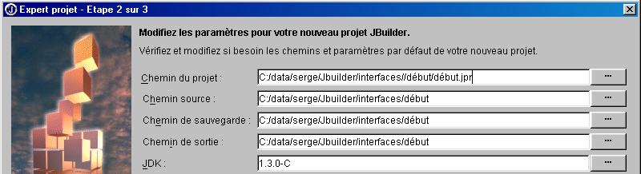
انقر على [التالي]
- تظهر شاشة جديدة تطلب منك وصف مشروعك:
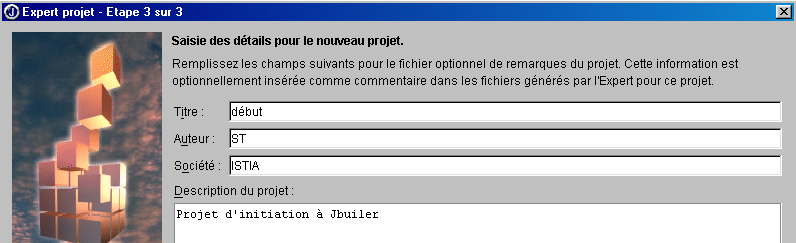
انقر على [إنهاء]
- تأكد من تحديد خيار "عرض/مشروع". يجب أن ترى هيكل مشروعك في الجزء الأيسر.

- الآن لنقم بإنشاء واجهة مستخدم رسومية في هذا المشروع. حدد الخيار "ملف/جديد/تطبيق":

في حقل "Class" (الفئة)، أدخل اسم الفئة المراد إنشاؤها. هنا، استخدمنا نفس اسم المشروع.
انقر فوق [Next]
- تظهر الشاشة التالية:

Class | interfaceStart هذا هو اسم الفئة المطابقة للنافذة التي سيتم إنشاؤها |
العنوان | هذا هو النص الذي سيظهر في شريط عنوان النافذة |
لاحظ أننا حددنا أعلاه أن النافذة يجب أن تكون في منتصف الشاشة عند بدء تشغيل التطبيق.
انقر فوق [إنهاء]
- وهنا يأتي دور JBuilder.
- يقوم بإنشاء ملفات المصدر .java للفئتين اللتين أطلقنا عليهما الاسم: فئة التطبيق وفئة واجهة المستخدم الرسومية. يظهر هذان الملفان في بنية المشروع في النافذة اليسرى

- للوصول إلى الكود الذي تم إنشاؤه للفئتين، ما عليك سوى النقر مرتين على ملف .java المقابل. سنعود إلى الكود الذي تم إنشاؤه لاحقًا.
- تأكد من تحديد خيار «عرض/الهيكل». يتيح لك هذا عرض هيكل الفئة المحددة حاليًا (انقر نقرًا مزدوجًا على ملف .java). وفيما يلي، على سبيل المثال، هيكل فئة «début»:

هنا نتعرف على:
-
المكتبات المستوردة (imports)
-
وجود منشئ start()
-
أن هناك طريقة ثابتة main()
-
أن هناك سمة packFrame
ما فائدة الوصول إلى بنية الفئة؟
-
يمكنك الحصول على نظرة عامة عليها. وهذا مفيد إذا كانت الفئة معقدة.
-
يمكنك الوصول إلى كود الأسلوب بالنقر عليه في نافذة بنية الفئة. مرة أخرى، هذا مفيد إذا كانت فئتك تحتوي على مئات الأسطر. لن تضطر إلى التمرير عبر كل سطر للعثور على الكود الذي تبحث عنه.
الكود الذي تم إنشاؤه بواسطة JBuilder جاهز للاستخدام بالفعل. انقر على Run/Run Project أو اضغط على F9، وسترى النافذة التي طلبتها:
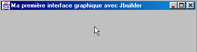
علاوة على ذلك، يتم إغلاقها بشكل صحيح عند النقر فوق زر إغلاق النافذة. لقد أنشأنا للتو واجهة المستخدم الرسومية الأولى لدينا. يمكننا حفظ مشروعنا باستخدام خيار File/Close Projects:

بالنقر فوق "الكل"، سيتم تحديد جميع المشاريع في النافذة أعلاه. سيؤدي النقر فوق "موافق" إلى إغلاقها. إذا كنا فضوليين بما يكفي للتنقل، باستخدام مستكشف Windows، إلى مجلد مشروعنا (المحدد للمعالج في بداية إعداد المشروع)، فسنجد الملفات التالية هناك:

في مثالنا، حددنا أن جميع الملفات (مصدر .java، مخرجات .class، نسخة احتياطية .jpr) يجب أن تكون في نفس مجلد مشروع .jpr.
5.2.2. الملفات التي تم إنشاؤها بواسطة JBuilder لواجهة رسومية
لنلقِ الآن نظرة على ملفات المصدر .java التي أنشأها JBuilder. من المهم معرفة كيفية قراءة ما تم إنشاؤه، لأننا سنحتاج في معظم الأحيان إلى إضافة كود إلى ما هو موجود بالفعل. لنبدأ بفتح مشروعنا: File/Open Project (ملف/فتح مشروع) واختيار مشروع debut.jpr. سنرى المشروع الذي أنشأناه سابقًا.
5.2.2.1. الفئة الرئيسية
دعونا نفحص الفئة début.java بالنقر المزدوج على اسمها في النافذة التي تعرض قائمة ملفات المشروع. لدينا الكود التالي:
import javax.swing.UIManager;
import java.awt.*;
public class début {
boolean packFrame = false;
/**Building the application*/
public début() {
interfaceDébut frame = new interfaceDébut();
//Validate frames with predefined sizes
//Compact frames with preferred size information - e.g. from their layout
if (packFrame) {
frame.pack();
}
else {
frame.validate();
}
//Center window
Dimension screenSize = Toolkit.getDefaultToolkit().getScreenSize();
Dimension frameSize = frame.getSize();
if (frameSize.height > screenSize.height) {
frameSize.height = screenSize.height;
}
if (frameSize.width > screenSize.width) {
frameSize.width = screenSize.width;
}
frame.setLocation((screenSize.width - frameSize.width) / 2, (screenSize.height - frameSize.height) / 2);
frame.setVisible(true);
}
/**Main method*/
public static void main(String[] args) {
try {
UIManager.setLookAndFeel(UIManager.getSystemLookAndFeelClassName());
}
catch(Exception e) {
e.printStackTrace();
}
new début();
}
}
دعونا نعلق على الكود الذي تم إنشاؤه:
- تقوم الدالة الرئيسية بتعيين مظهر النافذة (setLookAndFeel) وإنشاء مثيل لفئة début.
- ثم يتم تنفيذ منشئ début(). يقوم هذا المنشئ بإنشاء مثيل إطار لفئة النافذة (new interfaceDébut()). يتم إنشاء هذا المثيل ولكن لا يتم عرضه.
- ثم يتم تحديد حجم النافذة بناءً على المعلومات المتاحة لكل مكون من مكوناتها (frame.validate). ثم تبدأ وجودها المستقل من خلال عرض نفسها والاستجابة لمدخلات المستخدم.
- يتم توسيط النافذة على الشاشة لأننا طلبنا ذلك عند تكوين النافذة باستخدام المعالج.
لنرى ماذا سيحدث إذا قلصنا كود début.java إلى الحد الأدنى، كما فعلنا في بداية الفصل. لننشئ فئة جديدة. اختر File/New Class:

قم بتسمية الفئة الجديدة "start2" وانقر على [Finish]. يظهر ملف جديد في المشروع:
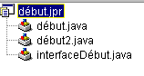
تم اختزال ملف début2.java إلى أبسط صوره:
دعونا نكمل الفئة على النحو التالي:
public class début2 {
// main function
public static void main(String args[]){
// creates the
new interfaceDébut().show(); // or new interfaceDébut.setVisible(true);
}//hand
}//class start2
تقوم الدالة الرئيسية بإنشاء مثيل لنافذة interfaceDébut وعرضها (show). قبل تشغيل مشروعنا، نحتاج إلى تحديد أن الفئة التي تحتوي على الدالة الرئيسية المراد تنفيذها هي الآن فئة début2. انقر بزر الماوس الأيمن على مشروع début.jpr واختر خيار Properties، ثم علامة التبويب Execution:
21

هنا، يُشار إلى أن الفئة الرئيسية هي début (1). انقر على الزر (2) لتحديد فئة رئيسية مختلفة:

حدد "début2" وانقر على [موافق].

انقر على [موافق] لتأكيد هذا الاختيار، ثم قم بتشغيل المشروع عن طريق اختيار «تشغيل/تشغيل المشروع» أو الضغط على المفتاح F9. ستظهر لك نفس النافذة التي ظهرت مع فئة «start»، باستثناء أنها ليست مركزة في الوسط لأن هذا لم يُطلب هنا. من الآن فصاعدًا، لن نعرض فئة «main» التي أنشأها JBuilder لأنها تقوم دائمًا بنفس الشيء: إنشاء نافذة. من الآن فصاعدًا، سنركز على فئة النافذة.
5.2.2.2. فئة النافذة
لنلقِ نظرة الآن على الكود الذي تم إنشاؤه لفئة interfaceDébut:
import java.awt.*;
import java.awt.event.*;
import javax.swing.*;
public class interfaceDébut extends JFrame {
JPanel contentPane;
BorderLayout borderLayout1 = new BorderLayout();
/**Building the frame*/
public interfaceDébut() {
enableEvents(AWTEvent.WINDOW_EVENT_MASK);
try {
jbInit();
}
catch(Exception e) {
e.printStackTrace();
}
}
/**Initialize component*/
private void jbInit() throws Exception {
contentPane = (JPanel) this.getContentPane();
contentPane.setLayout(borderLayout1);
this.setSize(new Dimension(400, 300));
this.setTitle("Ma première interface graphique avec Jbuilder");
}
/**Replaced, so we can get out when the window is closed*/
protected void processWindowEvent(WindowEvent e) {
super.processWindowEvent(e);
if (e.getID() == WindowEvent.WINDOW_CLOSING) {
System.exit(0);
}
}
}
5.2.2.2.1. المكتبات المستوردة
هذه هي مكتبات java.awt و java.awt.event و javax.swing. كانت المكتبتان الأوليتان هما الوحيدتان المتاحتان لإنشاء واجهات المستخدم الرسومية في الإصدارات المبكرة من Java. أما مكتبة javax.swing فهي أحدث. وهنا، فهي مطلوبة لنافذة JFrame المستخدمة في هذا المثال.
5.2.2.2.2. السمات
JPanel هو نوع حاوية يمكن وضع المكونات فيها. BorderLayout هو أحد مديري التخطيط المتاحين لوضع المكونات داخل الحاوية. في جميع أمثلةنا، لن نستخدم مدير تخطيط وسنضع المكونات بأنفسنا في موقع محدد داخل الحاوية. للقيام بذلك، سنستخدم مدير التخطيط null.
5.2.2.2.3. منشئ النافذة
/**Building the frame*/
public interfaceDébut() {
enableEvents(AWTEvent.WINDOW_EVENT_MASK);
try {
jbInit();
}
catch(Exception e) {
e.printStackTrace();
}
}
/**Initialize component*/
private void jbInit() throws Exception {
contentPane = (JPanel) this.getContentPane();
contentPane.setLayout(borderLayout1);
this.setSize(new Dimension(400, 300));
this.setTitle("Ma première interface graphique avec Jbuilder");
}
- يبدأ المنشئ بالإشارة إلى أنه سيتولى معالجة الأحداث على النافذة (enableEvents)، ثم يستدعي طريقة jbInit.
- يتم الحصول على الحاوية (JPanel) للنافذة (JFrame) (getContentPane)
- يتم تعيين مدير التخطيط (setLayout)
- يتم تعيين حجم النافذة (setSize)
- يتم تعيين عنوان النافذة (setTitle)
5.2.2.2.4. معالج الأحداث
/**Replaced, so we can get out when the window is closed*/
protected void processWindowEvent(WindowEvent e) {
super.processWindowEvent(e);
if (e.getID() == WindowEvent.WINDOW_CLOSING) {
System.exit(0);
}
أشارت الدالة المنشئة إلى أن الفئة ستتعامل مع أحداث النافذة. وتقوم الدالة processWindowEvent بهذه المهمة. تبدأ الدالة بتمرير WindowEvent المستلم إلى فئتها الأم (JFrame)؛ ثم، إذا كان الحدث هو WINDOW_CLOSING — الذي يتم تشغيله بالنقر فوق زر إغلاق النافذة — يتم إنهاء التطبيق.
5.2.2.2.5. الخلاصة
يختلف كود فئة النافذة عن الكود المقدم في المثال في بداية الفصل. إذا كنا نستخدم مولد كود Java بخلاف JBuilder، فمن المحتمل أن يكون لدينا كود مختلف تمامًا. في الممارسة العملية، سنقبل الكود الذي تم إنشاؤه بواسطة JBuilder لإنشاء النافذة حتى نتمكن من التركيز فقط على كتابة معالجات الأحداث لواجهة المستخدم الرسومية.
5.2.3. رسم واجهة المستخدم الرسومية
5.2.3.1. مثال
في المثال السابق، لم نضع أي مكونات في النافذة. لنقم الآن بإنشاء نافذة تحتوي على زر وتسمية وحقل إدخال:
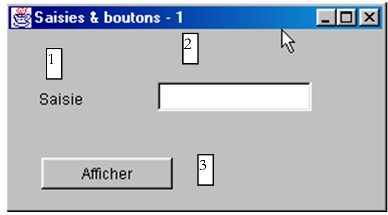
الحقول هي كما يلي:
رقم | الاسم | النوع | الدور |
1 | lblInput | JLabel | تسمية |
2 | txtInput | JTextField | حقل إدخال |
3 | cmdDisplay | JButton | لعرض محتويات حقل النص txtSaisie في مربع حوار |
باتباع نفس الإجراء المتبع في المشروع السابق، قم بإنشاء مشروع interface2.jpr دون إضافة أي مكونات إلى النافذة في الوقت الحالي.

في النافذة أعلاه، حدد فئة interface2.java من النافذة. ويوجد على يمين هذه النافذة مجلد مزود بعلامات تبويب:

توفر علامة التبويب "Source" (المصدر) إمكانية الوصول إلى كود المصدر لفئة interface2.java. تتيح لك علامة التبويب "Design" (التصميم) إنشاء النافذة بصريًا. حدد علامة التبويب هذه. سترى الآن حاوية النافذة، التي ستحتوي على المكونات التي تضعها فيها. وهي فارغة حاليًا. تعرض النافذة اليسرى بنية الفئة:

هذا | تمثل النافذة |
contentPane | وهي الحاوية التي سنضع فيها المكونات، بالإضافة إلى وضع التخطيط لهذه المكونات داخل الحاوية (BorderLayout بشكل افتراضي) |
borderLayout1 | مثيل لمدير التخطيط |
حدد هذا الكائن. ستظهر نافذة خصائصه على اليمين:

تستحق بعض هذه الخصائص الذكر:
الخلفية | لتعيين لون خلفية النافذة |
المقدمة | لتعيين لون النص والأزرار في النافذة |
JMenuBar | لربط قائمة بالنافذة |
title | لإعطاء النافذة عنوانًا |
resizable | لتعيين نوع النافذة |
الخط | لتعيين الخط للنص في النافذة |
مع استمرار تحديد هذا الكائن، يمكنك تغيير حجم الحاوية المعروضة على الشاشة عن طريق سحب نقاط الربط الموجودة حول الحاوية:
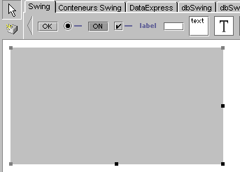
نحن الآن جاهزون لإسقاط المكونات في الحاوية أعلاه. قبل القيام بذلك، سنقوم بتغيير مدير التخطيط. حدد كائن contentPane في نافذة الهيكل:

ثم، في نافذة خصائص هذا الكائن، حدد خاصية التخطيط واختر القيمة null من الخيارات المتاحة:
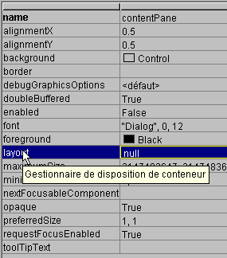
سيسمح لنا عدم وجود مدير تخطيط بوضع المكونات بحرية داخل الحاوية. حان الوقت الآن لاختيارها.
عند تحديد جزء التصميم، تصبح المكونات متاحة في مجلد مبوب في الجزء العلوي من نافذة التصميم:

لبناء واجهة المستخدم الرسومية، لدينا مكونات Swing (1) ومكونات AWT (2). هنا، سنستخدم مكونات Swing. في شريط المكونات أعلاه، حدد مكون JLabel (3)، ومكون JTextField (4)، ومكون JButton (5)، وقم بوضعها في الحاوية الخاصة بنافذة التصميم.

الآن دعونا نخصص كل مكون من هذه المكونات الثلاثة:
- التسمية (JLabel) jLabel1
حدد المكون لفتح نافذة الخصائص الخاصة به. في نافذة الخصائص، قم بتعديل الخصائص التالية: الاسم: lblSaisie، النص: Saisie
- حقل النص (JTextField) jTextfield1
حدد المكون لفتح نافذة الخصائص الخاصة به. في النافذة، قم بتعديل الخصائص التالية: الاسم: txtSaisie، النص: اتركه فارغًا
- الزر (JButton): الاسم: cmdAfficher، النص: Display
لدينا الآن النافذة التالية:

وبالهيكل التالي:

يمكننا تشغيل (F9) مشروعنا لإلقاء نظرة أولية على النافذة أثناء العمل:

أغلق النافذة. ما زلنا بحاجة إلى كتابة الإجراء المرتبط بالنقر على زر "Show". حدد الزر للوصول إلى نافذة "Properties" الخاصة به. تحتوي هذه النافذة على علامتي تبويب: "Properties" و"Events". حدد "Events".

يسرد العمود الأيسر من النافذة الأحداث المحتملة للزر. النقر على الزر يتوافق مع حدث actionPerformed. يحتوي العمود الأيمن على اسم الإجراء الذي يتم استدعاؤه عند حدوث الحدث المقابل. انقر على الخلية الموجودة على يمين حدث actionPerformed:
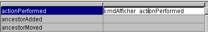
يقوم JBuilder بإنشاء اسم افتراضي لكل معالج حدث بالصيغة ComponentName_EventName، وفي هذه الحالة cmdDisplay_actionPerformed. يمكنك حذف الاسم الافتراضي وإدخال اسم آخر. للوصول إلى كود معالج cmdDisplay_actionPerformed، ما عليك سوى النقر مرتين على اسمه أعلاه. سيتم نقلك تلقائيًا إلى جزء مصدر الفئة، حيث سيكون المؤشر موضوعًا على الهيكل الأساسي لكود معالج الحدث:
كل ما تبقى هو إكمال هذا الكود. هنا، نريد عرض مربع حوار يحتوي على محتويات حقل txtSaisie:
void cmdAfficher_actionPerformed(ActionEvent e) {
JOptionPane.showMessageDialog(this, "texte saisi="+txtSaisie.getText(),
"Vérification de la saisie",JOptionPane.INFORMATION_MESSAGE);
}
JOptionPane هي فئة من مكتبة javax.swing. تتيح لك عرض رسائل مصحوبة برمز أو طلب معلومات من المستخدم. هنا، نستخدم طريقة ثابتة من الفئة:

parentComponent | كائن الحاوية "الأم" لمربع الحوار: هنا، this. |
message | كائن لعرضه. هنا، محتوى حقل الإدخال |
title | عنوان مربع الحوار |
messageType | نوع الرسالة المراد عرضها. يحدد الرمز الذي سيتم عرضه في المربع المجاور للرسالة. القيم الممكنة: INFORMATION_MESSAGE، QUESTION_MESSAGE، ERROR_MESSAGE، WARNING_MESSAGE، PLAIN_MESSAGE |
دعونا نشغل تطبيقنا (F9):


5.2.3.2. كود فئة النافذة
import java.awt.*;
import java.awt.event.*;
import javax.swing.*;
import java.beans.*;
import javax.swing.event.*;
public class interface2 extends JFrame {
JPanel contentPane;
JLabel lblSaisie = new JLabel();
JTextField txtSaisie = new JTextField();
JButton cmdAfficher = new JButton();
/**Building the frame*/
public interface2() {
enableEvents(AWTEvent.WINDOW_EVENT_MASK);
try {
jbInit();
}
catch(Exception e) {
e.printStackTrace();
}
}
/**Initialize component*/
private void jbInit() throws Exception {
lblSaisie.setText("Saisie");
lblSaisie.setBounds(new Rectangle(25, 23, 71, 21));
contentPane = (JPanel) this.getContentPane();
contentPane.setLayout(null);
this.setSize(new Dimension(304, 129));
this.setTitle("Saisies & boutons - 1");
txtSaisie.setBounds(new Rectangle(120, 21, 138, 24));
cmdAfficher.setText("Afficher");
cmdAfficher.setBounds(new Rectangle(111, 77, 77, 20));
cmdAfficher.addActionListener(new java.awt.event.ActionListener() {
public void actionPerformed(ActionEvent e) {
cmdAfficher_actionPerformed(e);
}
});
contentPane.add(lblSaisie, null);
contentPane.add(txtSaisie, null);
contentPane.add(cmdAfficher, null);
}
/**Replaced, so we can get out when the window is closed*/
protected void processWindowEvent(WindowEvent e) {
super.processWindowEvent(e);
if (e.getID() == WindowEvent.WINDOW_CLOSING) {
System.exit(0);
}
}
void cmdAfficher_actionPerformed(ActionEvent e) {
JOptionPane.showMessageDialog(this, "texte saisi="+txtSaisie.getText(), "Vérification de la saisie",JOptionPane.INFORMATION_MESSAGE);
}
}
5.2.3.2.1. السمات
JPanel contentPane;
JLabel lblSaisie = new JLabel();
JTextField txtSaisie = new JTextField();
JButton cmdAfficher = new JButton();
هنا لدينا حاوية مكونات JPanel والمكونات الثلاثة.
5.2.3.2.2. المنشئ
/**Building the frame*/
public interface2() {
enableEvents(AWTEvent.WINDOW_EVENT_MASK);
try {
jbInit();
}
catch(Exception e) {
e.printStackTrace();
}
}
/**Initialize component*/
private void jbInit() throws Exception {
lblSaisie.setText("Saisie");
lblSaisie.setBounds(new Rectangle(25, 23, 71, 21));
contentPane = (JPanel) this.getContentPane();
contentPane.setLayout(null);
this.setSize(new Dimension(304, 129));
this.setTitle("Saisies & boutons - 1");
txtSaisie.setBounds(new Rectangle(120, 21, 138, 24));
cmdAfficher.setText("Afficher");
cmdAfficher.setBounds(new Rectangle(111, 77, 77, 20));
cmdAfficher.addActionListener(new java.awt.event.ActionListener() {
public void actionPerformed(ActionEvent e) {
cmdAfficher_actionPerformed(e);
}
});
contentPane.add(lblSaisie, null);
contentPane.add(txtSaisie, null);
contentPane.add(cmdAfficher, null);
}
يشبه منشئ interface2 منشئ الواجهة الرسومية السابقة التي درسناها. وتكمن الاختلافات في طريقة jbInit: يعتمد كود إنشاء النافذة على المكونات الموضوعة بداخلها. يمكننا إعادة استخدام كود jbInit بإضافة تعليقاتنا الخاصة:
private void jbInit() throws Exception {
// the window itself (size, title)
this.setSize(new Dimension(304, 129));
this.setTitle("Saisies & boutons - 1");
// the component container
contentPane = (JPanel) this.getContentPane();
// no formatting manager for this container
contentPane.setLayout(null);
// label lblSaisie (label, position, size)
lblSaisie.setText("Saisie");
lblSaisie.setBounds(new Rectangle(25, 23, 71, 21));
// input field (position, size)
txtSaisie.setBounds(new Rectangle(120, 21, 138, 24));
// display button (label, position, size)
cmdAfficher.setText("Afficher");
cmdAfficher.setBounds(new Rectangle(111, 77, 77, 20));
// button event manager
cmdAfficher.addActionListener(new java.awt.event.ActionListener() {
public void actionPerformed(ActionEvent e) {
cmdAfficher_actionPerformed(e);
}
});
// add the 3 components to the container
contentPane.add(lblSaisie, null);
contentPane.add(txtSaisie, null);
contentPane.add(cmdAfficher, null);
}//jbInit
هناك نقطتان جديرتان بالملاحظة:
- كان من الممكن كتابة هذا الكود يدويًا. وهذا يعني أن JBuilder ليس ضروريًا لإنشاء واجهة مستخدم رسومية.
- الطريقة التي تم بها تعيين معالج الأحداث الخاص بالزر cmdAfficher. كان من الممكن تعريف معالج الأحداث الخاص بمكون cmdAfficher باستخدام `cmdAfficher.addActionListener(new handler())`، حيث تكون `handler` فئة تحتوي على طريقة عامة `actionPerformed` مسؤولة عن معالجة النقر على زر «Show». هنا، يستخدم JBuilder مثيلًا لفئة مجهولة الهوية كمعالج:
new java.awt.event.ActionListener() {
public void actionPerformed(ActionEvent e) {
cmdAfficher_actionPerformed(e);
}
يتم إنشاء مثيل جديد لواجهة ActionListener مع تعريف طريقة actionPerformed الخاصة بها في الحال. هذه الطريقة تستدعي ببساطة طريقة من فئة interface2. كل هذا مجرد حل بديل لتعريف إجراءات معالجة الأحداث لمكونات النافذة داخل نفس الفئة التي تنتمي إليها النافذة نفسها. يمكننا القيام بذلك بطريقة مختلفة:
مما يؤدي إلى البحث عن طريقة actionPerformed في هذه الفئة، أي في فئة النافذة. تبدو الطريقة الثانية أبسط، لكن الطريقة الأولى لها ميزة: فهي تسمح بمعالجات مختلفة لأزرار مختلفة، في حين أن الطريقة الثانية لا تسمح بذلك. في الحالة الأخيرة، يجب أن تتعامل طريقة actionPerformed الوحيدة مع النقرات من أزرار مختلفة، وبالتالي يجب أن تحدد أولاً الزر الذي أطلق الحدث قبل أن تبدأ المعالجة.
5.2.3.2.3. معالجات الأحداث
نرى تلك التي تناولناها بالفعل:
/**Replaced, so we can get out when the window is closed*/
protected void processWindowEvent(WindowEvent e) {
super.processWindowEvent(e);
if (e.getID() == WindowEvent.WINDOW_CLOSING) {
System.exit(0);
}
}
// click on View button
void cmdAfficher_actionPerformed(ActionEvent e) {
JOptionPane.showMessageDialog(this, "texte saisi="+txtSaisie.getText(), "Vérification de la saisie",JOptionPane.INFORMATION_MESSAGE);
}
5.2.3.3. الخلاصة
من المشروعين اللذين تمت دراستهما، يمكننا أن نستنتج أنه بمجرد إنشاء واجهة المستخدم الرسومية باستخدام JBuilder، فإن مهمة المطور هي كتابة معالجات الأحداث للأحداث التي يرغب في معالجتها لتلك الواجهة.
5.2.4. طلب المساعدة
مع Java، غالبًا ما تحتاج إلى المساعدة، خاصةً بسبب العدد الكبير جدًا من الفئات المتاحة. فيما يلي بعض النصائح للعثور على المساعدة بشأن فئة ما. حدد الخيار Help/Help Topics (المساعدة/مواضيع المساعدة) من القائمة.

تحتوي شاشة المساعدة عمومًا على نافذتين:
- النافذة اليسرى، حيث تدخل ما تبحث عنه. وتحتوي على ثلاث علامات تبويب: جدول المحتويات، والفهرس، والبحث.
- النافذة اليمنى، التي تعرض نتائج البحث
تتوفر المساعدة حول كيفية استخدام نظام المساعدة في JBuilder. في مساعدة JBuilder، حدد الخيار "المساعدة/استخدام المساعدة". سيشرح لك هذا كيفية استخدام نظام المساعدة. على سبيل المثال، سيعرض لك المكونات المختلفة لعارض المساعدة:
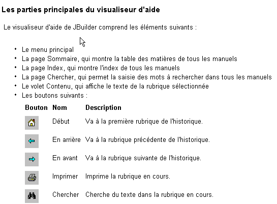
دعونا نلقي نظرة فاحصة على صفحات "جدول المحتويات" و"الفهرس".
5.2.4.1. المساعدة: جدول المحتويات
5.2.4.1.1. جدول المحتويات: مقدمة إلى لغة جافا
ستجد هنا أساسيات لغة Java، ولكن ليس هذا فقط، كما يتضح من قائمة الموضوعات التي يتناولها هذا القسم:

5.2.4.1.2. جدول المحتويات: الدروس
إذا اخترنا خيار الدروس في جدول المحتويات أعلاه، فستعرض النافذة الموجودة على اليمين قائمة بالدروس المتاحة:

تعد الدروس الأساسية مفيدة بشكل خاص للبدء في استخدام JBuilder. هناك العديد من الدروس الأخرى إلى جانب تلك الموضحة أعلاه، وعندما ترغب في تطوير تطبيق، قد يكون من المفيد التحقق أولاً مما إذا كان هناك درس تعليمي قد يساعدك.
5.2.4.1.3. المحتويات: JDK
من خلال تحديد خيار Java 2 JDK 1.3، يمكنك الوصول إلى جميع مكتبات JDK. بشكل عام، هذا ليس المكان المناسب للبحث إذا كنت بحاجة إلى معلومات حول فئة معينة ولا تعرف في أي مكتبة توجد. ومع ذلك، فإن هذا الخيار مفيد إذا كنت مهتمًا بالحصول على نظرة عامة على مكتبات Java.
5.2.4.2. المساعدة: الفهرس
حدد علامة التبويب "الفهرس" في الجزء الأيسر من نافذة "المساعدة". يتيح لك هذا الخيار، على سبيل المثال، العثور على مساعدة بشأن فئة ما. لنفترض، على سبيل المثال، أنك تريد معرفة أساليب حقول الإدخال Swing JTextField. اكتب JTextField في حقل نص البحث:

ستعرض "المساعدة" إدخالات الفهرس التي تبدأ بالنص الذي كتبته:

كل ما عليك فعله هو النقر المزدوج على المدخل الذي تهتم به، وهو في هذه الحالة فئة JTextField. ستظهر بعد ذلك المساعدة الخاصة بهذه الفئة في النافذة اليمنى:
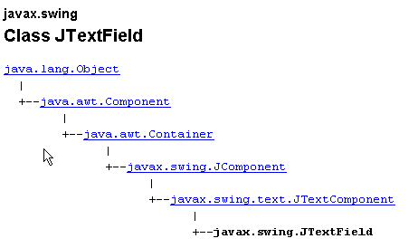
ثم يتم تقديم وصف كامل للفئة.
5.2.5. بعض مكونات Swing
سنقدم الآن تطبيقات متنوعة تستخدم مكونات Swing الأكثر شيوعًا لاستكشاف طرقها وخصائصها الرئيسية. بالنسبة لكل تطبيق، سنقدم الواجهة الرسومية والرمز ذي الصلة، لا سيما ما يتعلق بمعالجات الأحداث.
5.2.5.1. مكونات JLabel و JTextField
لقد تعرفنا بالفعل على هذين المكونين. JLabel هو مكون نصي و JTextField هو مكون حقل إدخال. طريقتاهما الرئيسيتان هما
String getText() | لاسترداد محتوى حقل الإدخال أو نص التسمية |
void setText(String text) | لتعيين النص في الحقل أو التسمية |
الأحداث الشائعة الاستخدام في JTextField هي كما يلي:
actionPerformed | يشير إلى أن المستخدم قد أكد (بالضغط على Enter) النص الذي أدخله |
caretUpdate | يشير إلى أن المستخدم قد حرك مؤشر الإدخال |
inputMethodChanged | يشير إلى أن المستخدم قد عدّل حقل الإدخال |
فيما يلي مثال يستخدم حدث caretUpdate لتتبع التغييرات في حقل الإدخال:

لا. | النوع | الاسم | الدور |
1 | JTextField | txtInput | حقل الإدخال |
2 | JTextField | txtControl | يعرض النص من 1 في الوقت الفعلي |
3 | JButton | cmdClear | لمسح الحقول 1 و 2 |
4 | JButton | cmdExit | للخروج من التطبيق |
الرمز ذو الصلة بهذا التطبيق هو كما يلي:
import java.awt.*;
....
public class Cadre1 extends JFrame {
JPanel contentPane;
JTextField txtSaisie = new JTextField();
JLabel jLabel1 = new JLabel();
JLabel jLabel2 = new JLabel();
JTextField txtControle = new JTextField();
JButton CmdEffacer = new JButton();
JButton CmdQuitter = new JButton();
/**Building the frame*/
public Cadre1() {
enableEvents(AWTEvent.WINDOW_EVENT_MASK);
try {
jbInit();
}
catch(Exception e) {
e.printStackTrace();
}
}
/**Initialize component*/
private void jbInit() throws Exception {
....
txtSaisie.addCaretListener(new javax.swing.event.CaretListener() {
public void caretUpdate(CaretEvent e) {
txtSaisie_caretUpdate(e);
}
});
...
CmdEffacer.addActionListener(new java.awt.event.ActionListener() {
public void actionPerformed(ActionEvent e) {
CmdEffacer_actionPerformed(e);
}
});
...
CmdQuitter.addActionListener(new java.awt.event.ActionListener() {
public void actionPerformed(ActionEvent e) {
CmdQuitter_actionPerformed(e);
}
});
....
}
/**Replaced, so we can get out when the window is closed*/
protected void processWindowEvent(WindowEvent e) {
...
}
void txtSaisie_caretUpdate(CaretEvent e) {
// the input cursor has moved
txtControle.setText(txtSaisie.getText());
}
void CmdQuitter_actionPerformed(ActionEvent e) {
// quit the application
System.exit(0);
}
void CmdEffacer_actionPerformed(ActionEvent e) {
// delete the contents of the input field
txtSaisie.setText("");
}
}
فيما يلي مثال على التنفيذ:

5.2.5.2. مكون JComboBox
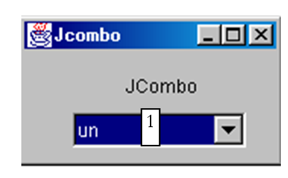

مكون JComboBox هو قائمة منسدلة مقترنة بحقل إدخال: يمكن للمستخدم إما اختيار عنصر من (2) أو كتابة نص في (1). بشكل افتراضي، لا يمكن تعديل مكونات JComboBox. يجب عليك استدعاء الطريقة setEditable(true) صراحةً لجعلها قابلة للتعديل. لمعرفة المزيد عن فئة JComboBox، اكتب JComboBox في فهرس المساعدة.
يمكن إنشاء كائن JComboBox بعدة طرق:
new JComboBox() | ينشئ مربع قائمة منسدلة فارغًا |
new JComboBox (Object[] items) | ينشئ مربع قائمة منسدلة يحتوي على مصفوفة من الكائنات |
new JComboBox(Vector items) | مثل ما سبق، ولكن مع متجه من الكائنات |
قد يبدو من المفاجئ أن مربع القائمة المنسدلة يمكن أن يحتوي على كائنات في حين أنه عادةً ما يحتوي على سلاسل. بصريًا، هذا هو الحال بالفعل. إذا كان JComboBox يحتوي على كائن obj، فإنه يعرض السلسلة obj.toString(). تذكر أن كل كائن لديه طريقة toString موروثة من فئة Object، والتي ترجع سلسلة "تمثل" الكائن.
الطرق المفيدة لفئة JComboBox هي كما يلي:
void addItem(Object anObject) | تضيف كائنًا إلى القائمة المنسدلة |
int getItemCount() | تُرجع عدد العناصر الموجودة في القائمة المنسدلة |
Object getItemAt(int i) | تُرجع الكائن رقم i في مربع القائمة المنسدلة |
void insertItemAt(Object anObject, int i) | تقوم بإدراج unObjet في الموضع i في مربع القائمة المنسدلة |
int getSelectedIndex() | تُرجع مؤشر العنصر المحدد في مربع القائمة المنسدلة |
Object getSelectedItem() | تُرجع العنصر المحدد في مربع القائمة المنسدلة |
void setSelectedIndex(int i) | تحدد العنصر i في مربع القائمة المنسدلة |
void setSelectedItem(Object anObject) | يحدد الكائن المحدد في مربع القائمة المنسدلة |
void removeAllItems() | يُفرغ مربع القائمة المنسدلة |
void removeItemAt(int i) | يزيل العنصر رقم i من مربع القائمة المنسدلة |
void removeItem(Object anObject) | يزيل الكائن المحدد من مربع القائمة المنسدلة |
void setEditable(boolean val) | يجعل مربع القائمة المنسدلة قابلاً للتحرير (val=true) أو غير قابل للتحرير (val=false) |
عند تحديد عنصر من القائمة المنسدلة، يتم تشغيل الحدث actionPerformed، والذي يمكن استخدامه بعد ذلك لاكتشاف التغيير في التحديد داخل مربع القائمة المنسدلة. في التطبيق التالي، نستخدم هذا الحدث لعرض العنصر الذي تم تحديده من القائمة.

نحن نعرض فقط الكود ذي الصلة بالنافذة.
public class Cadre1 extends JFrame {
JPanel contentPane;
JComboBox jComboBox1 = new JComboBox();
JLabel jLabel1 = new JLabel();
/**Building the frame*/
public Cadre1() {
enableEvents(AWTEvent.WINDOW_EVENT_MASK);
try {
jbInit();
}
catch(Exception e) {
e.printStackTrace();
}
// treatment - fill the combo
String[] infos={"un","deux","trois","quatre"};
for(int i=0;i<infos.length;i++)
jComboBox1.addItem(infos[i]);
}
/**Initialize component*/
private void jbInit() throws Exception {
....
jComboBox1.addActionListener(new java.awt.event.ActionListener() {
public void actionPerformed(ActionEvent e) {
jComboBox1_actionPerformed(e);
}
});
....
}
void jComboBox1_actionPerformed(ActionEvent e) {
// a new element has been selected - it is displayed
JOptionPane.showMessageDialog(this,jComboBox1.getSelectedItem(),
"actionPerformed",JOptionPane.INFORMATION_MESSAGE);
}
}
5.2.5.3. مكون JList
يعد مكون Swing JList أكثر تعقيدًا من نظيره في مكتبة AWT. وهناك اختلافان مهمان:
- يتم إدارة محتوى القائمة بواسطة كائن منفصل عن القائمة نفسها. هنا، سنستخدم كائن DefaultListModel، الذي يعمل مثل Vector ولكنه يُعلم كائن JList أيضًا كلما تغير محتواه بحيث يتم تحديث العرض المرئي للقائمة وفقًا لذلك.
- لا يتم تمرير القائمة بشكل افتراضي. يجب وضع القائمة داخل حاوية ScrollPane، والتي تتيح التمرير.
في شفرة المصدر، يمكن تعريف القائمة على النحو التالي:
// the vector of list values
DefaultlistModel valeurs=new DefaultListModel();
// the list itself, to which we associate the vector of its values
JList jList1 = new JList(valeurs);
// the scrolling container in which the list is placed to obtain a scrolling list
JScrollPane jScrollPane1 = new JScrollPane(jList1);
لإدراج قائمة jList1 في حاوية jScrollPane1، يعمل الكود الذي تم إنشاؤه بواسطة JBuilder بطريقة مختلفة:
- إعلان الحاوية في سمات النافذة
- ثم، في كود jbInit، تتم إضافة القائمة إلى الحاوية
لإضافة قيم إلى قائمة JList1 أعلاه، ما عليك سوى إضافتها إلى مصفوفة القيم الخاصة بها:
وستظهر لك النافذة التالية:
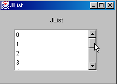
كيف تم تصميم هذه الواجهة؟
- اختر مكون JScrollPane من صفحة "Swing Containers" للمكونات واسحبه إلى النافذة، مع تغيير حجمه إلى الأبعاد المطلوبة
- حدد مكون JList من صفحة "Swing" الخاصة بالمكونات وأسقطه في حاوية JScrollPane، حيث سيشغل المساحة بالكامل.
يجب تعديل الكود الذي أنشأه JBuilder قليلاً للحصول على الكود التالي:
public class interfaceAppli extends JFrame {
JPanel contentPane;
JLabel jLabel1 = new JLabel();
DefaultListModel valeurs=new DefaultListModel();
JList jList1 = new JList(valeurs);
JScrollPane jScrollPane1 = new JScrollPane();
JLabel jLabel2 = new JLabel();
/**Building the frame*/
public interfaceAppli() {
enableEvents(AWTEvent.WINDOW_EVENT_MASK);
try {
jbInit();
}
catch(Exception e) {
e.printStackTrace();
}
// treatment
// include the list in the scrollPane
// init list
for(int i=0;i<10;i++)
valeurs.addElement(""+i);
}
/**Initialize component*/
private void jbInit() throws Exception {
....
// the jList1 list is associated with the jcrollPane1 container
jScrollPane1.getViewport().add(jList1, null);
}
/**Replaced, so we can get out when the window is closed*/
protected void processWindowEvent(WindowEvent e) {
....
}
}
دعونا الآن نستكشف الطرق الرئيسية لفئة JList من خلال البحث عن JList في فهرس المساعدة. يمكن إنشاء كائن JList بعدة طرق:

إحدى الطرق البسيطة هي الطريقة التي استخدمناها: إنشاء DefaultListModel V فارغ ثم ربطه بالقائمة المراد إنشاؤها باستخدام new JList(V). لا يدير كائن JList محتوى القائمة، بل الكائن الذي يحتوي على قيم القائمة. إذا تم إنشاء المحتوى باستخدام كائن DefaultListModel استنادًا إلى فئة Vector، فيمكن استخدام طرق فئة Vector لإضافة عناصر إلى القائمة وإدراجها وإزالتها منها. يمكن أن تدعم القائمة التحديد الفردي أو المتعدد. يتم تعيين ذلك بواسطة طريقة setSelectionMode:
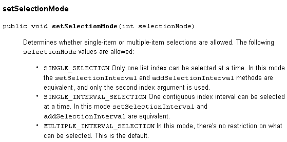
يمكنك تحديد وضع التحديد الحالي باستخدام getSelectionMode:

يمكن الحصول على العنصر (العناصر) المحدد باستخدام الطرق التالية:

نحن نعرف كيفية ربط متجه قيم بقائمة باستخدام منشئ JList(DefaultListModel). وبالمقابل، يمكننا الحصول على كائن DefaultListModel من JList عن طريق:

لدينا الآن ما يكفي من المعرفة لكتابة التطبيق التالي:

مكونات هذه النافذة هي كما يلي:
رقم | النوع | الاسم | الدور |
1 | JTextField | txtInput | حقل الإدخال |
2 | JList | jList1 | قائمة موجودة في حاوية jScrollPane1 |
3 | JList | jList2 | قائمة موجودة في حاوية jScrollPane2 |
4 | JButton | cmd1To2 | ينقل العناصر المحددة من القائمة 1 إلى القائمة 2 |
5 | JButton | cmd2To1 | يقوم بالعكس |
6 | JButton | cmdRaz1 | يمسح القائمة 1 |
7 | JButton | cmdRaz2 | مسح القائمة 2 |
يقوم المستخدم بكتابة نص في الحقل (1) وإرساله. يؤدي هذا إلى تشغيل حدث actionPerformed في حقل الإدخال، والذي يُستخدم لإضافة النص الذي تم إدخاله إلى القائمة 1. فيما يلي كود هذه الوظيفة الأولى:
public class interfaceAppli extends JFrame {
JPanel contentPane;
JLabel jLabel1 = new JLabel();
JLabel jLabel2 = new JLabel();
JLabel jLabel3 = new JLabel();
JTextField txtSaisie = new JTextField();
JButton cmd1To2 = new JButton();
JButton cmd2To1 = new JButton();
DefaultListModel v1=new DefaultListModel();
DefaultListModel v2=new DefaultListModel();
JList jList1 = new JList(v1);
JList jList2 = new JList(v2);
JScrollPane jScrollPane1 = new JScrollPane();
JScrollPane jScrollPane2 = new JScrollPane();
JButton cmdRaz1 = new JButton();
JButton cmdRaz2 = new JButton();
JLabel jLabel4 = new JLabel();
/**Building the frame*/
public interfaceAppli() {
enableEvents(AWTEvent.WINDOW_EVENT_MASK);
try {
jbInit();
}
catch(Exception e) {
e.printStackTrace();
}
}//interfaceAppli
/**Initialize component*/
private void jbInit() throws Exception {
...
txtSaisie.addActionListener(new java.awt.event.ActionListener() {
public void actionPerformed(ActionEvent e) {
txtSaisie_actionPerformed(e);
}
});
...
// Jlist1 is placed in the jScrollPane1 container
jScrollPane1.getViewport().add(jList1, null);
// Jlist2 is placed in the jScrollPane2 container
jScrollPane2.getViewport().add(jList2, null);
...
}
/**Replaced, so we can get out when the window is closed*/
protected void processWindowEvent(WindowEvent e) {
...
}
void txtSaisie_actionPerformed(ActionEvent e) {
// the input text has been validated
// we recover it free of its start and end spaces
String texte=txtSaisie.getText().trim();
// if it's empty, we don't want it
if(texte.equals("")){
// error msg
JOptionPane.showMessageDialog(this,"Vous devez taper un texte",
"Erreur",JOptionPane.WARNING_MESSAGE);
// end
return;
}//if
// if it is not empty, it is added to the values in list 1
v1.addElement(texte);
// and empty the input field
txtSaisie.setText("");
}/// txtSaisie_actionperformed
}//class
فيما يلي الكود الخاص بنقل العناصر المحددة من قائمة إلى أخرى:
void cmd1To2_actionPerformed(ActionEvent e) {
// transfer items selected in list 1 to list 2
transfert(jList1,jList2);
}//cmd1To2
void cmd2To1_actionPerformed(ActionEvent e) {
// transfer selected items in jList2 to jList1
transfert(jList2,jList1);
}//cmd2TO1
private void transfert(JList L1, JList L2){
// transfer items selected in list 1 to list 2
// retrieve the array of indices of the elements selected in L1
int[] indices=L1.getSelectedIndices();
// anything to do?
if (indices.length==0) return;
// we retrieve the values of L1
DefaultListModel v1=(DefaultListModel)L1.getModel();
// and L2
DefaultListModel v2=(DefaultListModel)L2.getModel();
for(int i=indices.length-1;i>=0;i--){
// the values selected in L1 are added to L2
v2.addElement(v1.elementAt(indices[i]));
// l1 elements copied into L2 must be deleted from L1
v1.removeElementAt(indices[i]);
}//for
}//transfer
الرمز المرتبط بأزرار Raz بسيط للغاية:
void cmdRaz1_actionPerformed(ActionEvent e) {
// empty list 1
v1.removeAllElements();
}//cmd Raz1
void cmdRaz2_actionPerformed(ActionEvent e) {
// empty list 2
v2.removeAllElements();
}///cmd Raz2
5.2.5.4. مربعات الاختيار JCheckBox، أزرار الاختيار JButtonRadio
نقترح كتابة التطبيق التالي:

مكونات النافذة هي كما يلي:
رقم | النوع | الاسم | الدور |
1 | JButtonRadio | jButtonRadio1 jButtonRadio2 jButtonRadio3 | 3 أزرار اختيار تشكل جزءًا من المجموعة buttonGroup1 |
2 | JCheckBox | jCheckBox1 jCheckBox2 jCheckBox3 | 3 مربعات اختيار |
3 | JList | jList1 | قائمة في حاوية jScrollPane1 |
4 | مجموعة الأزرار | buttonGroup1 | مكون غير مرئي - يُستخدم لتجميع أزرار الاختيار الثلاثة بحيث يتم إلغاء تحديد الأزرار الأخرى عند تحديد أحدها. |
يمكن إنشاء مجموعة من أزرار الاختيار على النحو التالي:
- ضع كل زر اختيار دون القلق بشأن تجميعها
- ضع مكون Swing ButtonGroup في الحاوية. هذا المكون غير مرئي. ولذلك لا يظهر في مصمم النوافذ. ومع ذلك، يظهر في هيكله:
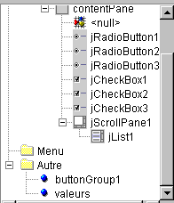
أعلاه، في الفرع "أخرى"، يمكنك رؤية السمات غير المرئية للنافذة. بمجرد إنشاء مجموعة أزرار الاختيار، يمكنك ربط كل زر اختيار بها. للقيام بذلك، حدد خصائص زر الاختيار:

وفي خاصية buttonGroup الخاصة بزر الاختيار، أدخل اسم المجموعة التي تريد وضع زر الاختيار فيها، وهنا buttonGroup1. كرر هذه الخطوة لجميع أزرار الاختيار الثلاثة.
الطريقة الرئيسية لأزرار الاختيار ومربعات الاختيار هي الطريقة isSelected()، التي تشير إلى ما إذا كان مربع الاختيار أو الزر محددًا أم لا. يمكن استرداد النص المرتبط بالمكون باستخدام getText() وتعيينه باستخدام setText(String text). يمكن تحديد مربع الاختيار أو زر الاختيار باستخدام الطريقة setSelected(boolean value).
عند النقر فوق زر الاختيار أو مربع الاختيار، يتم تشغيل الحدث actionPerformed. في الكود التالي، نستخدم هذا الحدث لتتبع التغييرات في قيم أزرار الاختيار ومربعات الاختيار:
public class interfaceAppli extends JFrame {
JPanel contentPane;
JRadioButton jRadioButton1 = new JRadioButton();
JRadioButton jRadioButton2 = new JRadioButton();
JRadioButton jRadioButton3 = new JRadioButton();
JCheckBox jCheckBox1 = new JCheckBox();
JCheckBox jCheckBox2 = new JCheckBox();
JCheckBox jCheckBox3 = new JCheckBox();
ButtonGroup buttonGroup1 = new ButtonGroup();
JScrollPane jScrollPane1 = new JScrollPane();
DefaultListModel valeurs=new DefaultListModel();
JList jList1 = new JList(valeurs);
/**Building the frame*/
public interfaceAppli() {
enableEvents(AWTEvent.WINDOW_EVENT_MASK);
try {
jbInit();
}
catch(Exception e) {
e.printStackTrace();
}
}
/**Initialize component*/
private void jbInit() throws Exception {
jRadioButton1.setSelected(true);
jRadioButton1.setText("un");
jRadioButton1.setBounds(new Rectangle(57, 31, 49, 23));
jRadioButton1.addActionListener(new java.awt.event.ActionListener() {
public void actionPerformed(ActionEvent e) {
afficheRadioButtons(e);
}
});
jRadioButton2.setBounds(new Rectangle(113, 30, 49, 23));
jRadioButton2.addActionListener(new java.awt.event.ActionListener() {
public void actionPerformed(ActionEvent e) {
afficheRadioButtons(e);
}
});
jRadioButton2.setText("deux");
jRadioButton3.setBounds(new Rectangle(168, 30, 49, 23));
jRadioButton3.addActionListener(new java.awt.event.ActionListener() {
public void actionPerformed(ActionEvent e) {
afficheRadioButtons(e);
}
});
jRadioButton3.setText("trois");
// radio buttons are grouped together
buttonGroup1.add(jRadioButton1);
buttonGroup1.add(jRadioButton2);
buttonGroup1.add(jRadioButton3);
// checkboxes
jCheckBox1.setText("A");
jCheckBox1.setBounds(new Rectangle(58, 69, 32, 17));
jCheckBox1.addActionListener(new java.awt.event.ActionListener() {
public void actionPerformed(ActionEvent e) {
afficheCases(e);
}
});
jCheckBox2.setBounds(new Rectangle(112, 69, 40, 17));
jCheckBox2.addActionListener(new java.awt.event.ActionListener() {
public void actionPerformed(ActionEvent e) {
afficheCases(e);
}
});
jCheckBox2.setText("B");
jCheckBox3.setText("C");
jCheckBox3.setBounds(new Rectangle(170, 69, 37, 17));
jCheckBox3.addActionListener(new java.awt.event.ActionListener() {
public void actionPerformed(ActionEvent e) {
afficheCases(e);
}
});
....
}
/**Replaced, so we can get out when the window is closed*/
protected void processWindowEvent(WindowEvent e) {
...
}
private void afficheRadioButtons(ActionEvent e){
// displays the values of the 3 radio buttons
valeurs.addElement("boutons radio=("+jRadioButton1.isSelected()+","+
jRadioButton2.isSelected()+","+jRadioButton3.isSelected()+")");
}//afficheRadioButtons
void afficheCases(ActionEvent e) {
// displays checkbox values
valeurs.addElement("cases à cocher=["+jCheckBox1.isSelected()+","+
jCheckBox2.isSelected()+","+jCheckBox3.isSelected()+")");
}//afficheCases
}//class
فيما يلي مثال على التنفيذ:

5.2.5.5. مكون JScrollBar
لنقم بإنشاء التطبيق التالي:

رقم | النوع | الاسم | الدور |
1 | JScrollBar | jScrollBar1 | شريط تمرير أفقي |
2 | JScrollBar | jScrollBar2 | شريط تمرير عمودي |
3 | JTextField | txtvalueHS | يعرض قيمة شريط التمرير الأفقي 1 - كما يسمح لك بتعيين هذه القيمة |
4 | JTextField | txtVSvalue | يعرض قيمة شريط التمرير الرأسي 2 - كما يسمح لك بتعيين هذه القيمة |
- يتيح شريط التمرير JScrollBar للمستخدم تحديد قيمة من نطاق من القيم الصحيحة التي يمثلها "شريط" شريط التمرير، الذي يتحرك عليه المؤشر.
- بالنسبة للمزلاج الأفقي، يمثل الطرف الأيسر القيمة الدنيا للنطاق، والطرف الأيمن القيمة القصوى، والمؤشر القيمة المحددة حاليًا. بالنسبة للمزلاج الرأسي، يمثل الطرف العلوي القيمة الدنيا، والطرف السفلي القيمة القصوى. يكون الزوج (min,max) افتراضيًا (0,100).
- يؤدي النقر على طرفي شريط التمرير إلى تغيير القيمة بمقدار وحدة واحدة (موجبة أو سالبة) اعتمادًا على الطرف الذي تم النقر عليه، كما هو محدد بواسطة المعلمة unitIncrement، التي تكون قيمتها الافتراضية 1.
- يؤدي النقر على أي من جانبي شريط التمرير إلى تغيير القيمة بمقدار وحدة واحدة (موجبة أو سالبة) اعتمادًا على الطرف الذي تم النقر عليه، وهو ما يُعرف باسم blockIncrement، والذي يكون افتراضيًا هو 10.
- يمكن استرداد هذه القيم الخمس (min، max، value، unitIncrement، blockIncrement) باستخدام الطرق getMinimum()، getMaximum()، getValue()، getUnitIncrement()، و getBlockIncrement()، والتي ترجع جميعها عددًا صحيحًا، ويمكن تعيينها باستخدام الطرق setMinimum(int min)، setMaximum(int max)، setValue(int val)، و setUnitIncrement(int uInc)، و setBlockIncrement(int bInc)
هناك بعض الأمور التي يجب معرفتها عند استخدام مكونات JScrollBar. أولاً، يمكن العثور عليها في لوحة مكونات Swing:

عند سحبها وإفلاتها في الحاوية، تكون عمودية بشكل افتراضي. يمكنك جعلها أفقية باستخدام خاصية التوجيه أدناه:

في نافذة الخصائص أعلاه، يمكنك ملاحظة أن بإمكانك الوصول إلى خصائص JScrollBar التالية: minimum و maximum و value و unitIncrement و blockIncrement. وبالتالي، يمكنك ضبط هذه القيم في مرحلة التصميم. وعندما تضع شريط التمرير على الحاوية، لا يظهر «شريط التمرير» الخاص به:

يمكنك حل هذه المشكلة بإضافة حدود إلى المكون. ويتم ذلك باستخدام خاصية border الخاصة به، والتي يمكن أن تأخذ قيمًا مختلفة:
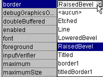
فيما يلي مثال على RaisedBevel:

عند النقر على الطرف العلوي من شريط التمرير العمودي، تنخفض قيمته. قد يفاجئ هذا المستخدم العادي، الذي يتوقع عادةً أن يرى القيمة "ترتفع". نحل هذه المشكلة عن طريق تعيين unitIncrement و blockIncrement على قيم سالبة.
كيف يمكنك تتبع التغييرات التي تطرأ على شريط التمرير؟ عندما تتغير قيمته، يتم تشغيل الحدث adjustmentValueChanged. ما عليك سوى ربط إجراء بهذا الحدث لتتلقى إشعارًا بكل تغيير في قيمة شريط التمرير.
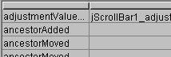
فيما يلي الكود ذو الصلة بتطبيقنا:
....
public class cadreAppli extends JFrame {
JPanel contentPane;
JScrollBar jScrollBar1 = new JScrollBar();
Border border1;
JTextField txtValeurHS = new JTextField();
JScrollBar jScrollBar2 = new JScrollBar();
JTextField txtValeurVS = new JTextField();
TitledBorder titledBorder1;
/**Building the frame*/
public cadreAppli() {
enableEvents(AWTEvent.WINDOW_EVENT_MASK);
try {
jbInit();
}
catch(Exception e) {
e.printStackTrace();
}
}
/**Initialize component*/
private void jbInit() throws Exception {
...
// a border for scrollbars
border1 = BorderFactory.createBevelBorder(BevelBorder.RAISED,Color.white,Color.white,new Color(134, 134, 134),new Color(93, 93, 93));
// no border title
titledBorder1 = new TitledBorder("");
jScrollBar1.setOrientation(JScrollBar.HORIZONTAL);
jScrollBar1.setBorder(BorderFactory.createRaisedBevelBorder());
jScrollBar1.setAutoscrolls(true);
jScrollBar1.setBounds(new Rectangle(37, 17, 218, 20));
jScrollBar1.addAdjustmentListener(new java.awt.event.AdjustmentListener() {
public void adjustmentValueChanged(AdjustmentEvent e) {
jScrollBar1_adjustmentValueChanged(e);
}
});
txtValeurHS.addActionListener(new java.awt.event.ActionListener() {
public void actionPerformed(ActionEvent e) {
txtValeurHS_actionPerformed(e);
}
});
jScrollBar2.setBounds(new Rectangle(39, 51, 30, 27));
jScrollBar2.addAdjustmentListener(new java.awt.event.AdjustmentListener() {
public void adjustmentValueChanged(AdjustmentEvent e) {
jScrollBar2_adjustmentValueChanged(e);
}
});
jScrollBar2.setAutoscrolls(true);
jScrollBar2.setUnitIncrement(-1);
jScrollBar2.setBorder(BorderFactory.createRaisedBevelBorder());
txtValeurVS.addActionListener(new java.awt.event.ActionListener() {
public void actionPerformed(ActionEvent e) {
txtValeurVS_actionPerformed(e);
}
});
......
}
/**Replaced, so we can get out when the window is closed*/
protected void processWindowEvent(WindowEvent e) {
...
}
void jScrollBar1_adjustmentValueChanged(AdjustmentEvent e) {
// the value of scrollbar 1 has changed
txtValeurHS.setText(""+jScrollBar1.getValue());
}
void jScrollBar2_adjustmentValueChanged(AdjustmentEvent e) {
// scrollbar 2 value has changed
txtValeurVS.setText(""+jScrollBar2.getValue());
}
void txtValeurHS_actionPerformed(ActionEvent e) {
// set the horizontal scrollbar value
setValeur(jScrollBar1,txtValeurHS);
}
void txtValeurVS_actionPerformed(ActionEvent e) {
// set the vertical scrollbar value
setValeur(jScrollBar2,txtValeurVS);
}
private void setValeur(JScrollBar jS, JTextField jT){
// sets the scrollbar value jS with the field text jT
int valeur=0;
try{
valeur=Integer.parseInt(jT.getText());
jS.setValue(valeur);
}
catch (Exception e){
// error is displayed
afficher(""+e);
}//try-catch
}//setValeur
void afficher(String message){
// displays a message in a box
JOptionPane.showMessageDialog(this,message,"Menus",JOptionPane.INFORMATION_MESSAGE);
}//display
}
فيما يلي مثال على التنفيذ:

5.2.5.6. مكون JTextArea
يُعد مكون JTextArea مكونًا يمكنك من خلاله إدخال عدة أسطر من النص، على عكس مكون JTextField الذي يقتصر على إدخال سطر واحد فقط. وإذا تم وضع هذا المكون داخل حاوية قابلة للتمرير (JScrollPane)، فستحصل على حقل إدخال نص قابل للتمرير. ويمكن العثور على هذا النوع من المكونات، على سبيل المثال، في تطبيق البريد الإلكتروني حيث يتم كتابة نص الرسالة المراد إرسالها في مكون JTextArea. الطرق القياسية هي String getText() لاسترداد محتوى منطقة النص، و setText(String text) لتعيين النص في منطقة النص، و append(String text) لإلحاق نص بالنص الموجود بالفعل في منطقة النص. انظر إلى التطبيق التالي:

رقم | النوع | الاسم | الدور |
1 | JTextArea | txtText | منطقة نص متعددة الأسطر |
2 | JButton | cmdDisplay | يعرض محتويات 1 في مربع حوار |
3 | JButton | cmdClear | يمسح محتويات 1 |
4 | JTextField | txtAdd | النص المضاف إلى النص الموجود في 1 عند التحقق من صحته بالضغط على مفتاح Enter. |
5 | JScrollPane | jScrollPane1 | حاوية قابلة للتمرير تم وضع مربع النص 1 فيها لإنشاء مربع نص قابل للتمرير. |
فيما يلي الكود ذو الصلة:
.....
public class cadreAppli extends JFrame {
JPanel contentPane;
JLabel jLabel1 = new JLabel();
JButton cmdAfficher = new JButton();
JScrollPane jScrollPane1 = new JScrollPane();
JTextArea txtTexte = new JTextArea();
JLabel jLabel2 = new JLabel();
JTextField txtAjout = new JTextField();
JButton cmdEffacer = new JButton();
/**Building the frame*/
public cadreAppli() {
enableEvents(AWTEvent.WINDOW_EVENT_MASK);
try {
jbInit();
}
catch(Exception e) {
e.printStackTrace();
}
}
/**Initialize component*/
private void jbInit() throws Exception {
cmdAfficher.addActionListener(new java.awt.event.ActionListener() {
public void actionPerformed(ActionEvent e) {
cmdAfficher_actionPerformed(e);
}
});
txtAjout.addActionListener(new java.awt.event.ActionListener() {
public void actionPerformed(ActionEvent e) {
txtAjout_actionPerformed(e);
}
});
cmdEffacer.addActionListener(new java.awt.event.ActionListener() {
public void actionPerformed(ActionEvent e) {
cmdEffacer_actionPerformed(e);
}
});
.......
jScrollPane1.getViewport().add(txtTexte, null);
}
/**Replaced, so we can get out when the window is closed*/
protected void processWindowEvent(WindowEvent e) {
........
}
void cmdAfficher_actionPerformed(ActionEvent e) {
// displays the contents of TextArea
afficher(txtTexte.getText());
}
void afficher(String message){
// displays a message in a box
JOptionPane.showMessageDialog(this,message,"Suivi",JOptionPane.INFORMATION_MESSAGE);
}// display
void cmdEffacer_actionPerformed(ActionEvent e) {
txtTexte.setText("");
}//cmdEffacer_actionPerformed
void txtAjout_actionPerformed(ActionEvent e) {
// add text
txtTexte.append(txtAjout.getText());
// raz addition
txtAjout.setText("");
}//
}
5.2.6. أحداث الماوس
عند الرسم في حاوية، من المهم معرفة موضع الماوس، على سبيل المثال، لعرض نقطة عند النقر عليها. تحرك الماوس تؤدي إلى تشغيل أحداث في الحاوية التي يتحرك داخلها. فيما يلي، على سبيل المثال، تلك التي يوفرها JBuilder لحاوية JPanel:

mouseClicked | نقرة الماوس |
mouseDragged | الماوس يتحرك، الزر الأيسر مضغوط |
mouseEntered | دخلت الماوس للتو إلى منطقة الحاوية |
mouseExited | الماوس قد غادر للتو منطقة الحاوية |
mouseMoved | الماوس يتحرك |
mousePressed | تم الضغط على زر الماوس الأيسر |
mouseReleased | تم تحرير زر الماوس الأيسر |
فيما يلي برنامج يساعدك على فهم أفضل لوقت حدوث أحداث الماوس المختلفة:
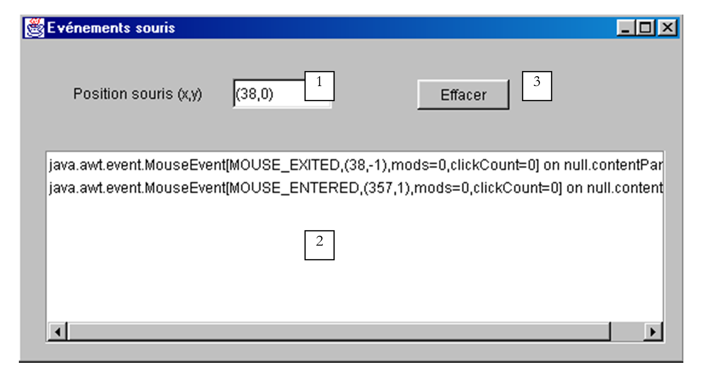
رقم | النوع | الاسم | الدور |
1 | JTextField | txtPosition | لعرض موضع الماوس في الحاوية (ربما MouseMoved) |
2 | JList | lstDisplay | لعرض أحداث الماوس بخلاف MouseMoved |
3 | JButton | cmdClear | لمسح محتويات 2 |
عند تشغيل هذا البرنامج، إليك ما ستحصل عليه عند النقر:

يتم تكديس الأحداث من أعلى القائمة. لذلك، توضح لقطة الشاشة أعلاه أن النقر يؤدي إلى تشغيل ثلاثة أحداث، بالترتيب التالي:
- MousePressed عند الضغط على الزر
- MouseReleased عند تحرير الزر
- MouseClicked، مما يشير إلى أن تسلسل الحدثين السابقين يُعتبر نقرة. قد تكون هذه نقرة مزدوجة. لكن في الأعلى، تشير المعلومة clickCount=1 إلى أنها نقرة واحدة.
الآن، إذا نقرت على الزر، وحركت الماوس، ثم حررت الزر:

هنا نرى الأحداث الثلاثة:
- MousePressed عند الضغط على الزر لأول مرة
- MouseDragged عند تحريك الماوس مع الضغط على الزر
- MouseReleased عند تحرير الزر
في المثالين أعلاه، نرى أن حدث الماوس يحمل معلومات متنوعة، بما في ذلك إحداثيات الماوس (x,y)، على سبيل المثال (408,65) في السطر الأول أعلاه.
إذا واصلنا بهذه الطريقة، نكتشف أن حدث MouseExited يتم تشغيله بمجرد خروج الماوس من الحاوية أو تحركه فوق أحد مكوناتها. في الحالة الأخيرة، تتلقى الحاوية حدث MouseExited ويتلقى المكون حدث MouseEntered. سيحدث العكس عندما يغادر الماوس المكون للعودة إلى الحاوية.
ماذا يحدث أثناء النقر المزدوج؟

نحصل على نفس الأحداث تمامًا كما في حالة النقر مرة واحدة. والفرق الوحيد هو أن الحدث يحمل المعلومات clickCount=2 (انظر أعلاه)، مما يشير إلى حدوث نقرة مزدوجة بالفعل.
الرمز ذو الصلة بهذا التطبيق هو كما يلي:
public class Cadre1 extends JFrame {
JPanel contentPane;
JLabel jLabel1 = new JLabel();
JTextField txtPosition = new JTextField();
JScrollPane jScrollPane1 = new JScrollPane();
DefaultListModel valeurs=new DefaultListModel();
JList lstAffichage = new JList(valeurs);
JButton cmdEffacer = new JButton();
/**Building the frame*/
public Cadre1() {
enableEvents(AWTEvent.WINDOW_EVENT_MASK);
try {
jbInit();
}
catch(Exception e) {
e.printStackTrace();
}
}
/**Initialize component*/
private void jbInit() throws Exception {
contentPane.addMouseMotionListener(new java.awt.event.MouseMotionAdapter() {
public void mouseMoved(MouseEvent e) {
contentPane_mouseMoved(e);
}
public void mouseDragged(MouseEvent e) {
contentPane_mouseDragged(e);
}
});
contentPane.addMouseListener(new java.awt.event.MouseAdapter() {
public void mouseEntered(MouseEvent e) {
contentPane_mouseEntered(e);
}
public void mouseExited(MouseEvent e) {
contentPane_mouseExited(e);
}
public void mousePressed(MouseEvent e) {
contentPane_mousePressed(e);
}
public void mouseClicked(MouseEvent e) {
contentPane_mouseClicked(e);
}
public void mouseReleased(MouseEvent e) {
contentPane_mouseReleased(e);
}
});
cmdEffacer.addActionListener(new java.awt.event.ActionListener() {
public void actionPerformed(ActionEvent e) {
cmdEffacer_actionPerformed(e);
}
});
jScrollPane1.getViewport().add(lstAffichage, null);
...............
}
/**Replaced, so we can get out when the window is closed*/
protected void processWindowEvent(WindowEvent e) {
.........
}
void contentPane_mouseMoved(MouseEvent e) {
txtPosition.setText("("+e.getX()+","+e.getY()+")");
}
void contentPane_mouseDragged(MouseEvent e) {
afficher(e);
}
void contentPane_mouseEntered(MouseEvent e) {
afficher(e);
}
void afficher(MouseEvent e){
// displays the event in the lstAffichage list
valeurs.insertElementAt(e,0);
}
void contentPane_mouseExited(MouseEvent e) {
afficher(e);
}
void contentPane_mousePressed(MouseEvent e) {
afficher(e);
}
void contentPane_mouseClicked(MouseEvent e) {
afficher(e);
}
void contentPane_mouseReleased(MouseEvent e) {
afficher(e);
}
void cmdEffacer_actionPerformed(ActionEvent e) {
// deletes the list
valeurs.removeAllElements();
}
}
5.2.7. إنشاء نافذة مع قائمة
الآن دعونا نرى كيفية إنشاء نافذة مع قائمة باستخدام JBuilder. سنقوم بإنشاء النافذة التالية:


أنشئ مشروعًا جديدًا يبدأ بنافذة فارغة. من قائمة مكونات "Swing Containers"، حدد مكون JMenuBar (انظر الشكل 1 أدناه) واسحبه إلى النافذة التي تقوم بتصميمها.

لا يظهر أي شيء في نافذة التصميم، لكن مكون JMenuBar يظهر في لوحة هيكل النافذة:

انقر نقرًا مزدوجًا على عنصر jMenuBar1 أعلاه للوصول إلى القائمة في وضع التصميم:

1 | أدخل عنصر قائمة |
2 | أدخل فاصل |
3 | إدراج قائمة متداخلة |
4 | إزالة عنصر من القائمة |
5 | تعطيل عنصر قائمة |
6 | عنصر قائمة مربع الاختيار |
7 | تبديل زر الاختيار |
لإنشاء عنصر القائمة الأول، اكتب "خيارات أ" في المربع أ أعلاه، ثم أدناه بالترتيب التالي: أ1، أ2، فاصل، أ3، أ4.

ثم بجانبه:

استخدم الأداة 3 للإشارة إلى أن B3 هي قائمة فرعية متداخلة.
مع تصميمنا للقائمة، تتطور البنية المنطقية لنافذتنا:

إذا قمنا بتشغيل تطبيقنا الآن، فسنرى نافذة فارغة بدون قائمة. نحتاج إلى ربط القائمة التي تم إنشاؤها بنافذتنا. للقيام بذلك، في بنية النافذة، حدد الكائن "this":

ستتمكن بعد ذلك من الوصول إلى خصائص هذا الكائن:

إحدى هذه الخصائص هي JMenuBar، والتي تُستخدم لتعيين القائمة التي سترتبط بالنافذة. انقر داخل الخلية الموجودة على يمين JMenuBar. ستظهر بعد ذلك جميع القوائم التي قمت بإنشائها. هنا، سيكون لدينا jMenuBar1 فقط. حدده.
قم بتشغيل التطبيق (F9):
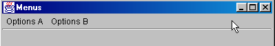
الآن لدينا قائمة، لكن الخيارات لا تؤدي أي وظيفة بعد. يتم التعامل مع خيارات القائمة كمكونات: فهي تحتوي على خصائص وأحداث. في بنية القائمة، حدد الخيار jMenuItem1:

يمكنك الآن الوصول إلى خصائصها وأحداثها:

حدد صفحة الأحداث وانقر على الخلية الموجودة على يمين الحدث actionPerformed: هذا هو الحدث الذي يحدث عند النقر على عنصر من عناصر القائمة. يتم توفير إجراء معالج بشكل افتراضي. انقر عليه مرتين للوصول إلى الكود الخاص به:

سنكتب الكود البسيط التالي:
void jMenuItem1_actionPerformed(ActionEvent e) {
afficher("L'option A1 a été sélectionnée");
}
void afficher(String message){
// displays a message in a box
JOptionPane.showMessageDialog(this,message,"Menus",JOptionPane.INFORMATION_MESSAGE);
}//display
قم بتشغيل التطبيق واختر الخيار A1 لترى الرسالة التالية:

فيما يلي الكود ذو الصلة بهذا التطبيق:
.....
public class Cadre1 extends JFrame {
JPanel contentPane;
BorderLayout borderLayout1 = new BorderLayout();
JMenuBar jMenuBar1 = new JMenuBar();
JMenu jMenu1 = new JMenu();
JMenuItem jMenuItem1 = new JMenuItem();
JMenuItem jMenuItem2 = new JMenuItem();
JMenuItem jMenuItem3 = new JMenuItem();
JMenuItem jMenuItem4 = new JMenuItem();
JMenu jMenu2 = new JMenu();
JMenuItem jMenuItem5 = new JMenuItem();
JMenuItem jMenuItem6 = new JMenuItem();
JMenu jMenu3 = new JMenu();
JMenuItem jMenuItem7 = new JMenuItem();
JMenuItem jMenuItem8 = new JMenuItem();
JMenuItem jMenuItem9 = new JMenuItem();
/**Building the frame*/
public Cadre1() {
enableEvents(AWTEvent.WINDOW_EVENT_MASK);
try {
jbInit();
}
catch(Exception e) {
e.printStackTrace();
}
}
/**Initialize component*/
private void jbInit() throws Exception {
// the window is associated with a menu
this.setJMenuBar(jMenuBar1);
jMenu1.setText("Options A");
jMenuItem1.setText("A1");
jMenuItem1.addActionListener(new java.awt.event.ActionListener() {
public void actionPerformed(ActionEvent e) {
jMenuItem1_actionPerformed(e);
}
});
jMenuItem2.setText("A2");
jMenuItem3.setText("A3");
jMenuItem4.setText("A4");
jMenu2.setText("Options B");
jMenuItem5.setText("B1");
jMenuItem6.setText("B2");
jMenu3.setText("B3");
jMenuItem7.setText("B31");
jMenuItem8.setText("B32");
jMenuItem9.setText("B4");
jMenuBar1.add(jMenu1);
jMenuBar1.add(jMenu2);
jMenu1.add(jMenuItem1);
jMenu1.add(jMenuItem2);
jMenu1.addSeparator();
jMenu1.add(jMenuItem3);
jMenu1.add(jMenuItem4);
jMenu2.add(jMenuItem5);
jMenu2.add(jMenuItem6);
jMenu2.add(jMenu3);
jMenu2.add(jMenuItem9);
jMenu3.add(jMenuItem7);
jMenu3.add(jMenuItem8);
}
/**Replaced, so we can get out when the window is closed*/
protected void processWindowEvent(WindowEvent e) {
....
}
void jMenuItem1_actionPerformed(ActionEvent e) {
afficher("L'option A1 a été sélectionnée");
}
void afficher(String message){
// displays a message in a box
JOptionPane.showMessageDialog(this,message,"Menus",JOptionPane.INFORMATION_MESSAGE);
}//display
}
5.3. مربعات الحوار
5.3.1. مربعات الرسائل
لقد استخدمنا بالفعل فئة JOptionPane لعرض الرسائل. وبالتالي، فإن الكود التالي:
import javax.swing.*;
public class dialog1 {
public static void main(String arg[]){
JOptionPane.showMessageDialog(null,"Un message","Titre de la boîte",JOptionPane.INFORMATION_MESSAGE);
}
}
يعرض مربع الحوار التالي:

عند إغلاق هذه النافذة، تختفي، ولكن لا يتوقف مؤشر الترابط التنفيذي الذي كان يعمل فيه. لا تحدث هذه الظاهرة عادةً. تُستخدم مربعات الحوار داخل تطبيق يستخدم، في مرحلة ما، عبارة System.exit(n) لإيقاف جميع مؤشرات الترابط. سنضع ذلك في اعتبارنا في الأمثلة القادمة، والتي تم إنشاؤها جميعًا على نفس النموذج. في نظام DOS، يمكن مقاطعة التطبيق باستخدام Ctrl-C. مع JBuilder، استخدم خيار Run/Reset Program (Ctrl-F2). بالإضافة إلى ذلك، فإن الحجة الأولى لـ showMessageDialog هي null هنا. هذا ليس هو الحال عادةً؛ فهي عادةً ما تكون this، حيث تشير this إلى النافذة الرئيسية للتطبيق.
5.3.2. المظهر والشعور
قد يختلف مظهر مربع الحوار أعلاه. يمكنك تكوين هذا المظهر باستخدام فئة javax.swing.UIManager. عندما قمنا بتعليق الكود الذي أنشأه JBuilder لنافذتنا الأولى، صادفنا عبارة لم نتوقف عندها:
تسمح لك طريقة setLookAndFeel الخاصة بفئة UIManager (UI = واجهة المستخدم) بتعيين مظهر الواجهات الرسومية. تحتوي فئة UIManager على طريقة تتيح لك تحديد "المظاهر" المحتملة للواجهات:
static UIManager.LookAndFeelInfo[] | getInstalledLookAndFeels() |
تُرجع الطريقة مصفوفة من كائنات LookAndFeelInfo. تحتوي هذه الفئة على طريقة:
String | getClassName() |
التي تُرجع اسم الفئة التي "تنفذ" مظهرًا معينًا. دعونا نجرب البرنامج التالي:
import javax.swing.*;
public class LookAndFeels {
// displays available looks and feels
public static void main(String[] args) {
// iste of installed look and feels
UIManager.LookAndFeelInfo[] lf=UIManager.getInstalledLookAndFeels();
// display
for(int i=0;i<lf.length;i++){
System.out.println(lf[i].getClassName());
}//for
}//hand
}//class
وينتج عن ذلك النتائج التالية:
javax.swing.plaf.metal.MetalLookAndFeel
com.sun.java.swing.plaf.motif.MotifLookAndFeel
com.sun.java.swing.plaf.windows.WindowsLookAndFeel
يبدو إذن أن هناك ثلاثة "مظاهر" "مختلفة". دعونا نعيد النظر في برنامج عرض الرسائل الخاص بنا من خلال تجربة المظاهر المختلفة الممكنة:
import javax.swing.*;
public class LookAndFeel2 {
// displays available looks and feels
public static void main(String[] args) {
// list of installed look and feels
UIManager.LookAndFeelInfo[] lf=UIManager.getInstalledLookAndFeels();
// display
for(int i=0;i<lf.length;i++){
// appearance manager
try{
UIManager.setLookAndFeel(lf[i].getClassName());
}catch(Exception ex){
System.err.println(ex.getMessage());
}//catch
// message
JOptionPane.showMessageDialog(null,"Un message",lf[i].getClassName(),JOptionPane.INFORMATION_MESSAGE);
}//for
}//hand
}//class
يؤدي التنفيذ إلى عرض ما يلي:
 |  |  |
تتوافق من اليمين إلى اليسار مع "الموضوعات" Metal و Pattern و Windows.
5.3.3. مربعات التأكيد
تحتوي فئة JOptionPane على طريقة showConfirmDialog لعرض مربعات حوار التأكيد التي تحتوي على أزرار "نعم" و"لا" و"إلغاء". هناك عدة إصدارات مفرطة التحميل لطريقة showConfirmDialog. سنقوم بفحص أحدها:
static int | showConfirmDialog(Component parentComponent, Object message, String title, int optionType) |
parentComponent | المكون الأصلي لمربع الحوار. غالبًا ما يكون النافذة أو القيمة null |
message | الرسالة المراد عرضها |
العنوان | عنوان مربع الحوار |
نوع_الخيار | JOptionPane.YES_NO_OPTION: أزرار "نعم" و"لا" JOptionPane.YES_NO_CANCEL_OPTION: أزرار نعم، لا، إلغاء |
النتيجة التي ترجعها الطريقة هي:
JOptionPane.YES_OPTION | نقر المستخدم على "نعم" |
JOptionPane.NO_OPTION | نقر المستخدم على "لا" |
JOptionPane.CANCEL_OPTION | نقر المستخدم على "إلغاء" |
JOptionPane.CLOSED_OPTION | أغلق المستخدم مربع الحوار |
إليك مثال:
import javax.swing.*;
public class confirm1 {
public static void main(String[] args) {
// displays confirmation boxes
int réponse;
affiche(JOptionPane.showConfirmDialog(null,"Voulez-vous continuer ?","Confirmation",JOptionPane.YES_NO_OPTION));
affiche(JOptionPane.showConfirmDialog(null,"Voulez-vous continuer ?","Confirmation",JOptionPane.YES_NO_CANCEL_OPTION));
}//hand
private static void affiche(int réponse){
// indicates the type of response
switch(réponse){
case JOptionPane.YES_OPTION :
System.out.println("Oui");
break;
case JOptionPane.NO_OPTION :
System.out.println("Non");
break;
case JOptionPane.CANCEL_OPTION :
System.out.println("Annuler");
break;
case JOptionPane.CLOSED_OPTION :
System.out.println("Fermeture");
break;
}//switch
}//poster
}//class
 |  |
على وحدة التحكم، يتم عرض الرسالتين "No" و"Cancel".
5.3.4. مربع الإدخال
تسمح لك فئة JOptionPane أيضًا بإدخال البيانات باستخدام طريقة showInputDialog. وهنا أيضًا، هناك عدة طرق مُثقلة. نقدم إحداها:
static String | showInputDialog(Component parentComponent, Object message, String title, int messageType) |
الحجج هي نفسها التي رأيناها عدة مرات من قبل. تعيد الطريقة السلسلة التي كتبها المستخدم. إليك مثال:
import javax.swing.*;
public class input1 {
public static void main(String[] args) {
// input
System.out.println("Chaîne saisie ["+
JOptionPane.showInputDialog(null,"Quel est votre nom","Saisie du nom",JOptionPane.QUESTION_MESSAGE )
+ "]");
}//hand
}//class
عرض مربع حوار الإدخال:

إخراج وحدة التحكم:
5.4. مربعات الاختيار
سنلقي الآن نظرة على عدد من مربعات حوار اختيار الملفات المحددة مسبقًا في Java 2:
JFileChooser | مربع حوار لاختيار ملف من شجرة الملفات |
JColorChooser | مربع حوار لاختيار لون |
5.4.1. مربع حوار اختيار JFileChooser
سنقوم بإنشاء التطبيق التالي:

العناصر التحكمية هي كما يلي:
رقم | النوع | اسم | الدور |
0 | JScrollPane | jScrollPane1 | حاوية قابلة للتمرير لمربع النص 1 |
1 | JTextArea نفسها داخل JScrollPane | txtText | نص تمت كتابته بواسطة المستخدم أو تم تحميله من ملف |
2 | JButton | btnSave | يحفظ النص من 1 إلى ملف نصي |
3 | JButton | btnLoad | يسمح لك بتحميل محتويات ملف نصي إلى 1 |
4 | JButton | btnClear | يمسح محتويات 1 |
يتم استخدام عنصر تحكم غير مرئي: jFileChooser1. يتم تحديده من لوحة حاويات JBuilder Swing:

نقوم بإسقاط المكون في نافذة التصميم ولكن خارج النموذج. ويظهر في قائمة المكونات:
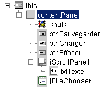
سنقدم الآن كود البرنامج ذي الصلة لإعطاء نظرة عامة:
import java.awt.*;
import java.awt.event.*;
import javax.swing.*;
import javax.swing.filechooser.FileFilter;
import java.io.*;
public class dialogues extends JFrame {
// frame components
JPanel contentPane;
JButton btnSauvegarder = new JButton();
JButton btnCharger = new JButton();
JButton btnEffacer = new JButton();
JScrollPane jScrollPane1 = new JScrollPane();
JTextArea txtTexte = new JTextArea();
JFileChooser jFileChooser1 = new JFileChooser();
// file filters
javax.swing.filechooser.FileFilter filtreTxt = null;
//Building the frame
public dialogues() {
enableEvents(AWTEvent.WINDOW_EVENT_MASK);
try {
jbInit();
// other initializations
moreInit();
}
catch(Exception e) {
e.printStackTrace();
}
}
// moreInit
private void moreInit(){
// window construction initializations
// filter *.txt
filtreTxt = new javax.swing.filechooser.FileFilter(){
public boolean accept(File f){
// do we accept f?
return f.getName().toLowerCase().endsWith(".txt");
}//accept
public String getDescription(){
// filter description
return "Fichiers Texte (*.txt)";
}//getDescription
};
// we add the filter
jFileChooser1.addChoosableFileFilter(filtreTxt);
// we also want to filter all files
jFileChooser1.setAcceptAllFileFilterUsed(true);
// set the start directory of the FileChooser box to the current directory
jFileChooser1.setCurrentDirectory(new File("."));
}
//Initialize component
private void jbInit() throws Exception {
.......................
}
//Replaced, so we can get out when the window is closed
protected void processWindowEvent(WindowEvent e) {
......................
}
}
void btnCharger_actionPerformed(ActionEvent e) {
// file selection using a JFileChooser object
// we set the initial filter
jFileChooser1.setFileFilter(filtreTxt);
// the selection box is displayed
int returnVal = jFileChooser1.showOpenDialog(this);
// did the user choose anything?
if(returnVal == JFileChooser.APPROVE_OPTION) {
// put the file in the text field
lireFichier(jFileChooser1.getSelectedFile());
}//if
}//btnCharger_actionPerformed
// lireFichier
private void lireFichier(File fichier){
// displays the contents of the text file file in the text field
// delete the text field
txtTexte.setText("");
// some data
BufferedReader IN=null;
String ligne=null;
try{
// open file in read mode
IN=new BufferedReader(new FileReader(fichier));
// read the file line by line
while((ligne=IN.readLine())!=null){
txtTexte.append(ligne+"\n");
}//while
// close file
IN.close();
}catch(Exception ex){
// an error has occurred
txtTexte.setText(""+ex);
}//catch
}
// delete
void btnEffacer_actionPerformed(ActionEvent e) {
// delete the text box
txtTexte.setText("");
}
// save
void btnSauvegarder_actionPerformed(ActionEvent e) {
// saves the contents of the text box to a file
// we set the initial filter
jFileChooser1.setFileFilter(filtreTxt);
// the backup selection box is displayed
int returnVal = jFileChooser1.showSaveDialog(this);
// did the user choose anything?
if(returnVal == JFileChooser.APPROVE_OPTION) {
// we write the contents of the text box to file
écrireFichier(jFileChooser1.getSelectedFile());
}//if
}
// lireFichier
private void écrireFichier(File fichier){
// writes the contents of the text box to file
// some data
PrintWriter PRN=null;
try{
// open file for writing
PRN=new PrintWriter(new FileWriter(fichier));
// write the contents of the text box
PRN.print(txtTexte.getText());
// close file
PRN.close();
}catch(Exception ex){
// an error has occurred
txtTexte.setText(""+ex);
}//catch
}
لن نعلق على كود طرق btnEffacer_Click و lireFichier و écrireFichier، لأنها لا تقدم أي شيء جديد. سنركز على فئة JFileChooser وكيفية استخدامها. هذه الفئة معقدة — "فوضوية" بعض الشيء. هنا، سنستخدم الطرق التالية فقط:
addChoosableFilter(FileFilter) | تعيين أنواع الملفات المتاحة للاختيار |
setAcceptAllFileFilterUsed(boolean) | تشير إلى ما إذا كان يجب عرض نوع "All Files" للاختيار أم لا |
File getSelectedFile() | الملف (File) الذي اختاره المستخدم |
int showSaveDialog() | طريقة تعرض مربع حوار الحفظ. تُرجع نتيجة من النوع int. تشير القيمة jFileChooser.APPROVE_OPTION إلى أن المستخدم قد قام باختيار صحيح. وإلا، فإن المستخدم إما قد ألغى الاختيار أو حدث خطأ. |
setCurrentDirectory | لتعيين الدليل الأولي الذي سيبدأ المستخدم منه استكشاف نظام الملفات |
setFileFilter(FileFilter) | لتعيين المرشح النشط |
تعرض طريقة showSaveDialog مربع حوار اختيار مشابه لما يلي:
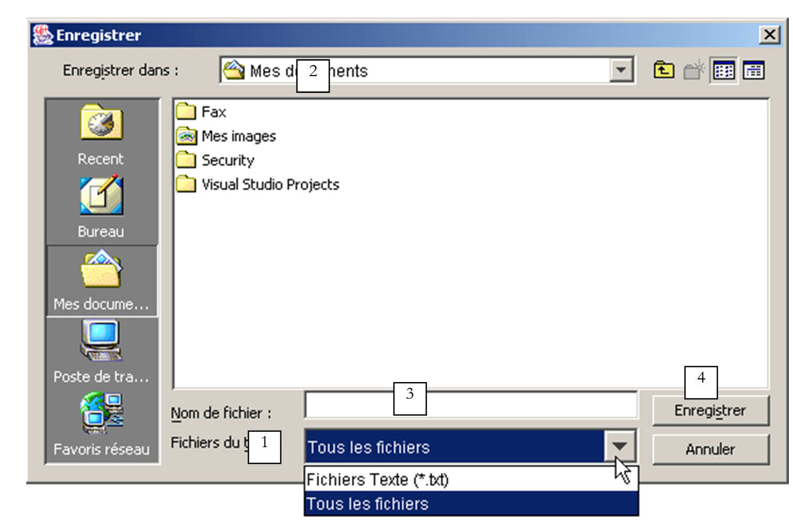
1 | قائمة منسدلة تم إنشاؤها باستخدام طريقة addChoosableFilter. وهي تحتوي على ما يُسمى بمرشحات الاختيار، والتي تمثلها فئة FileFilter. ويترك للمطور تحديد هذه المرشحات وإضافتها إلى القائمة 1. |
2 | الدليل الحالي، الذي تم تعيينه بواسطة طريقة setCurrentDirectory إذا تم استخدام تلك الطريقة؛ وإلا، فسيكون الدليل الحالي هو مجلد "My Documents" في Windows أو الدليل الرئيسي في Unix. |
3 | اسم الملف المحدد أو الذي كتبه المستخدم مباشرةً. سيكون متاحًا عبر طريقة getSelectedFile() |
4 | أزرار "حفظ"/"إلغاء". إذا تم استخدام زر "حفظ"، فإن طريقة showSaveDialog تُرجع النتيجة jFileChooser.APPROVE_OPTION |
كيف يتم إنشاء عوامل تصفية الملفات في القائمة المنسدلة 1؟ تتم إضافة عوامل التصفية إلى القائمة 1 باستخدام الطريقة:
addChoosableFilter(FileFilter) | تحدد أنواع الملفات المتاحة للاختيار |
من فئة JFileChooser. وما زلنا بحاجة إلى فهم فئة FileFilter. وهذه الفئة هي في الواقع فئة javax.swing.filechooser.FileFilter، وهي فئة مجردة — أي فئة لا يمكن إنشاء مثيل لها، بل يمكن فقط إنشاء فئات مشتقة منها. وهي معرَّفة على النحو التالي:
FileFilter() | منشئ |
boolean accept(File) | يشير إلى ما إذا كان الملف f يطابق المرشح أم لا |
String getDescription() | سلسلة وصف المرشح |
لنأخذ مثالاً. نريد أن توفر القائمة المنسدلة 1 مرشحاً لاختيار ملفات *.txt مع الوصف "ملفات نصية (*.txt)".
- نحتاج إلى إنشاء فئة مشتقة من فئة FileFilter
- استخدم طريقة accept(File f) المنطقية لإرجاع true إذا كان اسم الملف f ينتهي بـ .txt
- استخدم طريقة String getDescription() لتعيين الوصف إلى "ملفات نصية (*.txt)"
يمكن تعريف هذا الفلتر في تطبيقنا على النحو التالي:
javax.swing.filechooser.FileFilter filtreTxt = new javax.swing.filechooser.FileFilter(){
public boolean accept(File f){
// do we accept f?
return f.getName().toLowerCase().endsWith(".txt");
}//accept
public String getDescription(){
// filter description
return "Fichiers Texte (*.txt)";
}//getDescription
};
سيتم إضافة هذا المرشح إلى قائمة المرشحات الخاصة بكائن jFileChooser1 باستخدام العبارة التالية:
يتم تنفيذ كل هذا وبعض عمليات التهيئة الأخرى في طريقة moreInit، التي يتم تنفيذها عند إنشاء النافذة (انظر البرنامج الكامل أعلاه). فيما يلي كود زر "حفظ":
void btnSauvegarder_actionPerformed(ActionEvent e) {
// saves the contents of the text box to a file
// we set the initial filter
jFileChooser1.setFileFilter(filtreTxt);
// the backup selection box is displayed
int returnVal = jFileChooser1.showSaveDialog(this);
// did the user choose anything?
if(returnVal == JFileChooser.APPROVE_OPTION) {
// we write the contents of the text box to file
écrireFichier(jFileChooser1.getSelectedFile());
}//if
}
تسلسل العمليات كما يلي:
- نقوم بتعيين المرشح النشط على *.txt للسماح للمستخدم بالبحث بشكل أساسي عن هذا النوع من الملفات. كما يتوفر مرشح "All Files" (جميع الملفات). وقد تمت إضافته في الإجراء moreInit. وبذلك يكون لدينا مرشحان.
- يتم عرض مربع حوار اختيار الملف. هنا، يتم تسليم التحكم إلى المستخدم، الذي يستخدم مربع الحوار لاختيار ملف من نظام الملفات.
- عندما يخرج المستخدم من مربع الاختيار، نتحقق من قيمة الإرجاع لمعرفة ما إذا كان يجب علينا حفظ مربع النص أم لا. إذا كان الأمر كذلك، فيجب حفظه في الملف الذي تم الحصول عليه عبر طريقة getSelectedFile.
يشبه الكود المرتبط بزر "تحميل" إلى حد كبير الكود الخاص بزر "حفظ".
void btnCharger_actionPerformed(ActionEvent e) {
// file selection using a JFileChooser object
// we set the initial filter
jFileChooser1.setFileFilter(filtreTxt);
// the selection box is displayed
int returnVal = jFileChooser1.showOpenDialog(this);
// did the user choose anything?
if(returnVal == JFileChooser.APPROVE_OPTION) {
// put the file in the text field
lireFichier(jFileChooser1.getSelectedFile());
}//if
}//btnCharger_actionPerformed
هناك اختلافان:
- لعرض مربع حوار اختيار الملف، نستخدم طريقة showOpenDialog بدلاً من طريقة showSaveDialog. يشبه مربع الحوار المعروض ذلك الذي تعرضه طريقة showSaveDialog.
- إذا نجح المستخدم في تحديد ملف، فإننا نستدعي طريقة readFile بدلاً من طريقة writeFile.
5.4.1.1. مربعات حوار الاختيار JColorChooser و JFontChooser
نواصل المثال السابق بإضافة زرين جديدين:
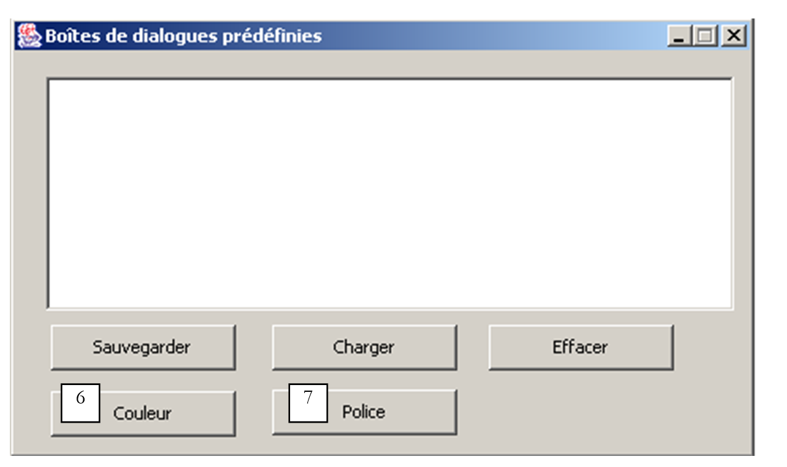
رقم | النوع | الاسم | الدور |
6 | JButton | btnColor | لتعيين لون نص TextBox |
7 | JButton | btnFont | لتعيين خط TextBox |
يمكن العثور على مكون JColorChooser، الذي يعرض مربع حوار لاختيار اللون، في قائمة مكونات Swing في JBuilder:

نقوم بإسقاط هذا المكون في نافذة التصميم، ولكن خارج النموذج. لا يظهر في النموذج ولكنه موجود مع ذلك في قائمة مكونات النافذة:

فئة JColorChooser بسيطة للغاية. نعرض مربع حوار اختيار اللون باستخدام الطريقة int showDialog:
static Color | showDialog(Component component, String title, Color initialColor) |
Component component | المكون الأصلي لمحدد الألوان، وعادةً ما يكون نافذة JFrame |
String title | العنوان في شريط العنوان لمربع الاختيار |
اللون intialColor | اللون المحدد مبدئيًا في أداة اختيار الألوان |
إذا اختار المستخدم لونًا، تعرض الطريقة لونًا؛ وإلا، تعرض null. فيما يلي الكود المرتبط بزر اللون:
void btnCouleur_actionPerformed(ActionEvent e) {
// choice of text color using JColorChooser component
Color couleur;
if((couleur=jColorChooser1.showDialog(this,"Choix d'une couleur",Color.BLACK))!=null){
// set the color of the characters in the text box
txtTexte.setForeground(couleur);
}//if
}
يتم تعريف فئة Color في java.awt.Color. وتوجد بها ثوابت متنوعة، بما في ذلك Color.BLACK للون الأسود. ويظهر مربع حوار الاختيار على النحو التالي
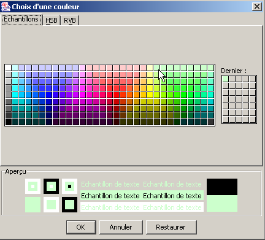
ومن الغريب أن مكتبة Swing لا توفر فئة لاختيار الخط. لحسن الحظ، تتوفر موارد Java عبر الإنترنت. من خلال البحث عن الكلمة الرئيسية "JFontChooser"، التي تبدو اسمًا محتملًا لمثل هذه الفئة، نجد عدة خيارات. سيمنحنا المثال التالي الفرصة لتكوين JBuilder لاستخدام الحزم غير المضمنة في إعداداته الأولية.
تسمى الحزمة التي تم استردادها swingextras.jar وتم وضعها في المجلد <jdk>\jre\lib\perso، حيث يشير <jdk> إلى دليل التثبيت الخاص بـ JDK الذي يستخدمه JBuilder. كان من الممكن وضعها في أي مكان آخر.
 |  |
دعونا نلقي نظرة على محتويات حزمة SwingExtras.jar:

تحتوي على كود مصدر Java للمكونات المضمنة في الحزمة. كما تحتوي على الفئات نفسها:

من هذا الأرشيف، لاحظ أن فئة JFontChooser تسمى في الواقع com.lamatek.swingextras.JFontChooser. إذا كنت لا ترغب في كتابة الاسم الكامل، فستحتاج إلى تضمين ما يلي في بداية برنامجك:
كيف سيجد المُجمِّع وآلة Java الافتراضية هذه الحزمة الجديدة؟ في حالة الاستخدام المباشر لـ JDK، فقد تم شرح ذلك بالفعل، ويمكن للقارئ العثور على التفاصيل في القسم الخاص بحزم Java. هنا، نوضح بالتفصيل الطريقة التي يجب استخدامها مع JBuilder. يتم تكوين الحزم في قائمة Options/Configure JDKs:

1 | يتيح لك الزر "تحرير" (1) إخبار JBuilder بـ JDK الذي يجب استخدامه. في هذا المثال، جاء JBuilder مرفقًا مع JDK 1.3.1. وعندما تم إصدار JDK 1.4، تم تثبيته بشكل منفصل عن JBuilder، واستخدمنا الزر "تحرير" لإخبار JBuilder باستخدام JDK 1.4 من الآن فصاعدًا عن طريق تحديد دليل التثبيت الخاص به |
2 | الدليل الأساسي لـ JDK المستخدم حاليًا بواسطة JBuilder |
3 | قائمة بأرشيفات Java (.jar) التي يستخدمها JBuilder. يمكنك إضافة المزيد باستخدام زر "إضافة" (4) |
4 | يتيح لك زر "إضافة" (4) إضافة حزم جديدة سيستخدمها JBuilder لتجميع البرامج وتشغيلها. استخدمناه هنا لإضافة حزمة SwingExtras.jar (5) |
الآن تم تكوين JBuilder بشكل صحيح لاستخدام فئة JFontChooser. ومع ذلك، سنحتاج إلى الوصول إلى تعريف هذه الفئة لاستخدامها بشكل صحيح. يحتوي أرشيف swingextras.jar على ملفات HTML يمكن استخراجها للاستخدام. هذا غير ضروري. يمكن الوصول مباشرة إلى وثائق Java المضمنة في ملفات .jar من JBuilder. للقيام بذلك، قم بتكوين علامة التبويب "الوثائق" (6) أعلاه. تظهر النافذة الجديدة التالية:

يتيح لنا الزر "إضافة" تحديد أنه يجب فحص ملف SwingExtras.jar بحثًا عن الوثائق. بمجرد الانتهاء من ذلك، يمكننا أن نرى أننا نستطيع بالفعل الوصول إلى وثائق SwingExtras.jar. ويوفر هذا عدة مزايا:
- إذا بدأت في كتابة عبارة الاستيراد
سترى أن JBuilder يقدم المساعدة:

تم العثور على حزمة com.lamatek بنجاح.
- الآن، في البرنامج التالي:
إذا ضغطت على F1 على الكلمة الرئيسية JFontChooser، فسترى تعليمات حول هذه الفئة:

يمكننا أن نلاحظ في شريط الحالة 1 أن ملف HTML من حزمة swingextras.jar يُستخدم بالفعل. المثال الموضح أعلاه واضح بما يكفي لتمكيننا من كتابة كود زر «الخط» في تطبيقنا:
void btnPolice_actionPerformed(ActionEvent e) {
// choice of text font using JFontChooser component
jFontChooser1 = new JFontChooser(new Font("Arial", Font.BOLD, 12));
if (jFontChooser1.showDialog(this, "Choix d'une police") == JFontChooser.ACCEPT_OPTION) {
// change the font in the text box
txtTexte.setFont(jFontChooser1.getSelectedFont());
}//if
}
يظهر مربع حوار الاختيار الذي تعرضه طريقة showDialog أعلاه على النحو التالي:

5.5. التطبيق الرسومي لحساب الضرائب
نعود إلى تطبيق IMPOTS، الذي تناولناه مرتين من قبل. سنقوم الآن بإضافة واجهة مستخدم رسومية إليه:

العناصر التحكمية هي كما يلي
رقم | النوع | الاسم | الدور |
1 | JRadioButton | rdYes | محدد إذا كان متزوجًا |
2 | JRadioButton | rdNo | تم تحديد إذا لم يكن متزوجًا |
3 | JSpinner | spinChildren | عدد أطفال المكلف الحد الأدنى=0، الحد الأقصى=20، الزيادة=1 |
4 | JTextField | txtSalary | الراتب السنوي للمكلف بالضريبة بالفرنك السويسري |
5 | JLabel | lblTaxes | مبلغ الضريبة المستحقة |
6 | JTextField | txtStatus | حقل رسالة الحالة - غير قابل للتعديل |
القائمة هي كما يلي:
الخيار الرئيسي | الخيار الثانوي | الاسم | الدور |
الضرائب | |||
التهيئة | mnuInitialize | تحميل البيانات اللازمة للحساب من ملف نصي | |
حساب | mnuCalculate | يحسب الضريبة المستحقة عندما تكون جميع البيانات اللازمة موجودة وصحيحة | |
مسح | mnuClear | إعادة تعيين النموذج إلى حالته الأولية | |
خروج | mnuExit | يغلق التطبيق |
قواعد التشغيل
- تظل قائمة "حساب" معطلة طالما أن حقل الراتب فارغ
- إذا تبين أن الراتب غير صحيح عند إجراء الحساب، يتم الإبلاغ عن خطأ:

فيما يلي البرنامج. وهو يستخدم فئة *impots* التي تم إنشاؤها في الفصل الخاص بالفئات. ولم يتم هنا إدراج بعض الأكواد التي تم إنشاؤها تلقائيًا بواسطة JBuilder.
import java.awt.*;
import java.awt.event.*;
import javax.swing.*;
import javax.swing.filechooser.FileFilter;
import java.io.*;
import java.util.*;
import javax.swing.event.*;
public class frmImpots extends JFrame {
// window components
JPanel contentPane;
JMenuBar jMenuBar1 = new JMenuBar();
JMenu jMenu1 = new JMenu();
JMenuItem mnuInitialiser = new JMenuItem();
JMenuItem mnuCalculer = new JMenuItem();
JMenuItem mnuEffacer = new JMenuItem();
JMenuItem mnuQuitter = new JMenuItem();
JLabel jLabel1 = new JLabel();
JFileChooser jFileChooser1 = new JFileChooser();
JTextField txtStatus = new JTextField();
JRadioButton rdOui = new JRadioButton();
JRadioButton rdNon = new JRadioButton();
JLabel jLabel2 = new JLabel();
JLabel jLabel3 = new JLabel();
JTextField txtSalaire = new JTextField();
JLabel jLabel4 = new JLabel();
JLabel jLabel5 = new JLabel();
JLabel lblImpots = new JLabel();
JLabel jLabel7 = new JLabel();
ButtonGroup buttonGroup1 = new ButtonGroup();
JSpinner spinEnfants=null;
FileFilter filtreTxt=null;
// class attributes
double[] limites=null;
double[] coeffr=null;
double[] coeffn=null;
impots objImpots=null;
//Building the frame
public frmImpots() {
enableEvents(AWTEvent.WINDOW_EVENT_MASK);
try {
jbInit();
}
catch(Exception e) {
e.printStackTrace();
}
// other initializations
moreInit();
}
// form initialization
private void moreInit(){
// calculate menu disabled
mnuCalculer.setEnabled(false);
// inhibited input zones
txtSalaire.setEditable(false);
txtSalaire.setBackground(Color.WHITE);
// status field
txtStatus.setBackground(Color.WHITE);
// spinner Children - between 0 and 20 children
spinEnfants=new JSpinner(new SpinnerNumberModel(0,0,20,1));
spinEnfants.setBounds(new Rectangle(137,60,40,27));
contentPane.add(spinEnfants);
// filter *.txt for selection box
filtreTxt = new javax.swing.filechooser.FileFilter(){
public boolean accept(File f){
// do we accept f?
return f.getName().toLowerCase().endsWith(".txt");
}//accept
public String getDescription(){
// filter description
return "Fichiers Texte (*.txt)";
}//getDescription
};
// add the *.txt filter
jFileChooser1.addChoosableFileFilter(filtreTxt);
// we also want to filter all files
jFileChooser1.setAcceptAllFileFilterUsed(true);
// set the box's start directory FileChooser
jFileChooser1.setCurrentDirectory(new File("."));
}//moreInit
//Initialize component
private void jbInit() throws Exception {
................
}
//Replaced, so we can get out when the window is closed
protected void processWindowEvent(WindowEvent e) {
.....................
}
void mnuQuitter_actionPerformed(ActionEvent e) {
// quit the application
System.exit(0);
}
void mnuInitialiser_actionPerformed(ActionEvent e) {
// load the data file
// selected with the JFileChooser1 selection box
jFileChooser1.setFileFilter(filtreTxt);
if (jFileChooser1.showOpenDialog(this)!=JFileChooser.APPROVE_OPTION)
return;
// process the selected file
try{
// dATA READING
lireFichier(jFileChooser1.getSelectedFile());
// create impots object
objImpots=new impots(limites,coeffr,coeffn);
// confirmation
txtStatus.setText("Données chargées");
// salary can be modified
txtSalaire.setEditable(true);
// no more chgt possible
mnuInitialiser.setEnabled(false);
}catch(Exception ex){
// problem
txtStatus.setText("Erreur : " + ex.getMessage());
// end
return;
}//catch
}
private void lireFichier(File fichier) throws Exception {
// data tables
ArrayList aLimites=new ArrayList();
ArrayList aCoeffR=new ArrayList();
ArrayList aCoeffN=new ArrayList();
String[] champs=null;
// open file in read mode
BufferedReader IN=new BufferedReader(new FileReader(fichier));
// read the file line by line
// they are of the limit form coeffr coeffn
String ligne=null;
int numLigne=0; // line number courannte
while((ligne=IN.readLine())!=null){
// one more line
numLigne++;
// break down the line into fields
champs=ligne.split("\\s+");
// 3 fields?
if(champs.length!=3)
throw new Exception("ligne " + numLigne + "erronée dans fichier des données");
// we retrieve the three fields
aLimites.add(champs[0]);
aCoeffR.add(champs[1]);
aCoeffN.add(champs[2]);
}//while
// close file
IN.close();
// data transfer to bounded arrays
int n=aLimites.size();
limites=new double[n];
coeffr=new double[n];
coeffn=new double[n];
for(int i=0;i<n;i++){
limites[i]=Double.parseDouble((String)aLimites.get(i));
coeffr[i]=Double.parseDouble((String)aCoeffR.get(i));
coeffn[i]=Double.parseDouble((String)aCoeffN.get(i));
}//for
}
void mnuCalculer_actionPerformed(ActionEvent e) {
// tAX CALCULATION
// salary verification
int salaire=0;
try{
salaire=Integer.parseInt(txtSalaire.getText().trim());
if(salaire<0) throw new Exception();
}catch (Exception ex){
// error msg
txtStatus.setText("Salaire incorrect. Recommencez");
// focus on wrong field
txtSalaire.requestFocus();
// back to interface
return;
}
// no. of children
Integer InbEnfants=(Integer)spinEnfants.getValue();
// tAX CALCULATION
lblImpots.setText(""+objImpots.calculer(rdOui.isSelected(),InbEnfants.intValue(),salaire));
// delete status msg
txtStatus.setText("");
}
void txtSalaire_caretUpdate(CaretEvent e) {
// the salary has changed - update the calculate menu
mnuCalculer.setEnabled(! txtSalaire.getText().trim().equals(""));
}
void mnuEffacer_actionPerformed(ActionEvent e) {
// raz du formulaire
rdNon.setSelected(true);
spinEnfants.getModel().setValue(new Integer(0));
txtSalaire.setText("");
mnuCalculer.setEnabled(false);
lblImpots.setText("");
}
}
هنا استخدمنا مكونًا متاحًا فقط بدءًا من JDK 1.4، وهو JSpinner. إنه مكون دوار، والذي يسمح في هذه الحالة للمستخدم بتعيين عدد الأطفال. لم يكن هذا المكون Swing متاحًا في شريط مكونات Swing في JBuilder 6 المستخدم للاختبار. هذا لا يمنع استخدامه، حتى لو كانت الأمور أكثر تعقيدًا قليلاً مقارنة بالمكونات المتاحة في شريط المكونات. في الواقع، لا يمكنك سحب مكون JSpinner وإفلاته في النموذج أثناء وقت التصميم. يجب عليك القيام بذلك في وقت التشغيل. دعونا نلقي نظرة على الكود الذي يقوم بذلك:
// spinner Children - between 0 and 20 children
spinEnfants=new JSpinner(new SpinnerNumberModel(0,0,20,1));
spinEnfants.setBounds(new Rectangle(137,60,40,27));
contentPane.add(spinEnfants);
السطر الأول ينشئ مكون JSpinner. يمكن استخدام هذا المكون لأغراض متنوعة، وليس فقط كعجلة أرقام صحيحة كما هو الحال هنا. حجة منشئ JSpinner هي نموذج عجلة أرقام يقبل أربعة معلمات (القيمة، الحد الأدنى، الحد الأقصى، الزيادة). المكون له الشكل التالي:

القيمة | القيمة الأولية المعروضة في المكون |
الحد الأدنى | القيمة الدنيا التي يمكن عرضها في المكون |
الحد الأقصى | القيمة القصوى التي يمكن عرضها في المكون |
الزيادة | قيمة الزيادة للقيمة المعروضة عند استخدام أسهم المكون لأعلى/لأسفل |
يتم الحصول على قيمة المكون عبر طريقة getValue الخاصة به، والتي تُرجع نوع Object. وبالتالي، يلزم إجراء بعض التحويلات النوعية للحصول على العدد الصحيح الذي نحتاجه:
// nbre d'enfants
Integer InbEnfants=(Integer)spinEnfants.getValue();
// calcul de l'impôt
lblImpots.setText(""+objImpots.calculer(rdOui.isSelected(),
InbEnfants.intValue(),salaire));
بمجرد تعريف مكون JSpinner، يتم وضعه في النافذة:
أولاً وقبل كل شيء، يجب على المستخدم استخدام خيار القائمة Initialize، الذي ينشئ كائن tax باستخدام المنشئ
لفئة impots. تذكر أن هذا تم تعريفه كمثال في الفصل الخاص بالفئات. راجع ذلك الفصل إذا لزم الأمر. يتم ملء المصفوفات الثلاثة المطلوبة من قبل المنشئ من محتويات ملف نصي بالصيغة التالية:
12620.0 | 0 | 0 |
13190 | 0.05 | 631 |
15,640 | 0.1 | 1,290.5 |
24,740 | 0.15 | 2,072.5 |
31,810 | 0.2 | 3,309.5 |
39,970 | 0.25 | 4900 |
48,360 | 0.3 | 6,898.5 |
55,790 | 0.35 | 9,316.5 |
92,970 | 0.4 | 12,106 |
127,860 | 0.45 | 16,754.5 |
151,250 | 0.50 | 23,147.5 |
172,040 | 0.55 | 30,710 |
195,000 | 0.60 | 39,312 |
0 | 0.65 | 49062 |
يحتوي كل سطر على ثلاثة أرقام مفصولة بمسافة واحدة على الأقل. يتم اختيار هذا الملف النصي من قبل المستخدم باستخدام مكون JFileChooser. بمجرد إنشاء كائن *impots*، كل ما يتبقى هو السماح للمستخدم بإدخال المعلومات الثلاثة المطلوبة: متزوج أم لا، عدد الأطفال، الراتب السنوي، واستدعاء طريقة calculate لفئة impots. يمكن تكرار العملية عدة مرات. يتم إنشاء كائن *impots* نفسه مرة واحدة فقط، عند استخدام الخيار *Initialize*.
5.6. كتابة التطبيقات الصغيرة
5.6.1. مقدمة
بمجرد كتابة تطبيق بواجهة مستخدم رسومية، يصبح من السهل جدًا تحويله إلى تطبيق صغير. يمكن تخزينه على الجهاز A، وتنزيله عبر متصفح الويب من الجهاز B عبر الإنترنت. وبالتالي، يتم مشاركة التطبيق الأصلي بين العديد من المستخدمين، وهذه هي الفائدة الرئيسية لتحويل التطبيق إلى تطبيق صغير. ومع ذلك، لا يمكن تحويل كل تطبيق بهذه الطريقة: لتجنب التسبب في مشاكل للمستخدم الذي يقوم بتشغيل تطبيق صغير في متصفحه، فإن بيئة التطبيق الصغير مقيدة:
- لا يمكن للتطبيق الصغير القراءة من قرص المستخدم أو الكتابة عليه
- يمكنها فقط التواصل مع الجهاز الذي تم تنزيلها منه بواسطة المتصفح.
هذه قيود مهمة. فهي تعني، على سبيل المثال، أن التطبيق الذي يحتاج إلى قراءة معلومات من ملف أو قاعدة بيانات يجب أن يطلبها عبر تطبيق ترحيل موجود على الخادم الذي تم تنزيله منه.
فيما يلي الهيكل العام لتطبيق ويب بسيط:

- يطلب العميل مستند HTML من خادم الويب، عادةً باستخدام متصفح. قد يحتوي هذا المستند على تطبيق صغير يعمل كتطبيق رسومي مستقل داخل مستند HTML المعروض بواسطة متصفح العميل.
- قد يكون لهذا التطبيق الصغير حق الوصول إلى البيانات، ولكن فقط إلى البيانات الموجودة على خادم الويب. ولن يكون له حق الوصول إلى موارد جهاز العميل الذي يقوم بتشغيله، ولا إلى موارد الأجهزة الأخرى على الشبكة بخلاف الجهاز الذي تم تنزيله منه.
5.6.2. فئة JApplet
5.6.2.1. التعريف
يمكن تنزيل التطبيق عبر متصفح الويب إذا كان مثيلًا لفئة java.applet.Applet أو فئة javax.swing.JApplet. وتشتق الفئة الأخيرة من الأولى، التي تشتق بدورها من فئة Panel، والتي تشتق بدورها من فئة Container. ونظرًا لأن مثيل Applet أو JApplet ينتمي إلى نوع Container، فإنه يمكن أن يحتوي على مكونات (Component) مثل الأزرار ومربعات الاختيار والقوائم وما إلى ذلك. وفيما يلي بعض الملاحظات حول دور الطرق المختلفة:
الطريقة | الدور |
public void destroy(); | تدمر مثيل Applet |
public AppletContext getAppletContext(); | يسترد سياق تنفيذ التطبيق الصغير (مستند HTML الذي يوجد فيه، والتطبيقات الصغيرة الأخرى في نفس المستند، وما إلى ذلك) |
public String getAppletInfo(); | تُرجع سلسلة تحتوي على معلومات حول التطبيق الصغير |
public AudioClip getAudioClip(URL url); | تحميل ملف الصوت المحدد بواسطة URL |
public AudioClip getAudioClip(URL url, String name); | يقوم بتحميل ملف الصوت المحدد بواسطة URL/name |
public URL getCodeBase(); | تُرجع عنوان URL الخاص بالتطبيق الصغير |
public URL getDocumentBase(); | تُرجع عنوان URL لوثيقة HTML التي تحتوي على التطبيق الصغير |
public Image getImage(URL url); | يسترد الصورة المحددة بواسطة عنوان URL |
public Image getImage(URL url, String name); | يسترد الصورة المحددة بواسطة عنوان URL/الاسم |
public String getParameter(String name); | يسترد قيمة المعلمة "name" الموجودة في علامة <applet> في مستند HTML الذي يحتوي على التطبيق الصغير. |
public void init(); | يتم استدعاء هذه الطريقة بواسطة المتصفح عند تشغيل التطبيق الصغير لأول مرة |
public boolean isActive(); | حالة التطبيق الصغير |
public void play(URL url); | تشغيل ملف الصوت المحدد بواسطة عنوان URL |
public void play(URL url, String name); | تشغيل ملف الصوت المحدد بواسطة URL/name |
public void resize(Dimension d); | يحدد حجم إطار التطبيق الصغير |
public void resize(int width, int height); | نفس الشيء |
public final void setStub(AppletStub stub); | |
public void showStatus(String msg); | يعرض رسالة في شريط حالة التطبيق الصغير |
public void start(); | يتم استدعاء هذه الطريقة من قبل المتصفح في كل مرة يتم فيها عرض المستند الذي يحتوي على التطبيق الصغير |
public void stop(); | يتم استدعاء هذه الطريقة من قبل المتصفح كلما تم التخلي عن المستند الذي يحتوي على التطبيق الصغير لصالح مستند آخر (يقوم المستخدم بتغيير عنوان URL) |
أدخلت فئة JApplet عدة تحسينات على فئة Applet، ولا سيما القدرة على احتواء مكونات JMenuBar (أي القوائم)، وهو ما لم يكن ممكنًا مع فئة Applet.
5.6.2.2. تنفيذ التطبيق الصغير: طرق init و start و stop
عندما يقوم المتصفح بتحميل تطبيق صغير، فإنه يستدعي ثلاثًا من أساليبه:
init | يتم استدعاء هذه الطريقة عند تحميل التطبيق الصغير لأول مرة. ولذلك يجب أن تحتوي على عمليات التهيئة اللازمة للتطبيق. |
start | يتم استدعاء هذه الطريقة كلما أصبح المستند الذي يحتوي على التطبيق الصغير هو المستند الحالي للمتصفح. وبالتالي، عندما يقوم المستخدم بتحميل تطبيق صغير، يتم تنفيذ طريقتي init و start بهذا الترتيب. وعندما يغادر المستخدم المستند لعرض مستند آخر، يتم تنفيذ طريقة stop. وعندما يعود المستخدم إليه لاحقًا، يتم تنفيذ طريقة start. |
stop | يتم استدعاء هذه الطريقة في كل مرة يغادر فيها المستخدم المستند الذي يحتوي على التطبيق الصغير. |
بالنسبة للعديد من التطبيقات الصغيرة، لا يلزم سوى طريقة init. ولا تكون طريقتا start و stop ضروريتين إلا إذا أطلق التطبيق مهام (خيوط) تعمل بشكل متوازٍ ومستمر، غالبًا دون علم المستخدم. وعندما يغادر المستخدم المستند، يختفي الجزء المرئي من التطبيق، لكن هذه المهام في الخلفية تستمر في العمل. وغالبًا ما يكون هذا غير ضروري. ثم نستفيد من استدعاء المتصفح لطريقة stop لإيقافها. إذا عاد المستخدم إلى المستند، فإننا نستفيد من استدعاء المتصفح لطريقة start لإعادة تشغيلها.
لنأخذ على سبيل المثال تطبيقًا صغيرًا يحتوي على ساعة في واجهته الرسومية. يتم الحفاظ على هذه الساعة بواسطة مهمة في الخلفية (خيط). عندما يغادر المستخدم صفحة التطبيق الصغير في المتصفح، لا فائدة من إبقاء الساعة قيد التشغيل لأنها أصبحت غير مرئية: في طريقة الإيقاف الخاصة بالتطبيق الصغير، سنوقف الخيط الذي يدير الساعة. في طريقة start، نعيد تشغيله بحيث عندما يعود المستخدم إلى صفحة التطبيق الصغير، يجد ساعة محدثة.
5.6.3. تحويل تطبيق رسومي إلى تطبيق صغير
نفترض هنا أن هذا التحويل ممكن، مما يعني أنه يتوافق مع قيود التنفيذ الخاصة بالتطبيقات الصغيرة. يتم تشغيل التطبيق بواسطة طريقة *main* لإحدى فئاته:
يتم تحويل مثل هذا التطبيق إلى تطبيق صغير على النحو التالي:
import java.applet.JApplet;
…
public class application extends JApplet{
…
public void init(){
…
}
…
}// end of class
لاحظ النقاط التالية:
- تشتق فئة Application الآن من فئة JApplet
- تم استبدال الطريقة main بالطريقة init.
على سبيل المثال، دعونا نراجع تطبيقًا درسناه سابقًا: إدارة القوائم.

تتكون عناصر هذه النافذة مما يلي:
رقم | النوع | اسم | الدور |
1 | JTextField | txtInput | حقل الإدخال |
2 | JList | jList1 | قائمة موجودة في حاوية jScrollPane1 |
3 | JList | jList2 | قائمة موجودة في حاوية jScrollPane2 |
4 | JButton | cmd1To2 | ينقل العناصر المحددة من القائمة 1 إلى القائمة 2 |
5 | JButton | cmd2To1 | يقوم بالعكس |
6 | JButton | cmdRaz1 | يمسح القائمة 1 |
7 | JButton | cmdRaz2 | مسح القائمة 2 |
كان الهيكل الأساسي للتطبيق كما يلي:
public class interfaceAppli extends JFrame {
JPanel contentPane;
JLabel jLabel1 = new JLabel();
JLabel jLabel2 = new JLabel();
JLabel jLabel3 = new JLabel();
JTextField txtSaisie = new JTextField();
JButton cmd1To2 = new JButton();
JButton cmd2To1 = new JButton();
DefaultListModel v1=new DefaultListModel();
DefaultListModel v2=new DefaultListModel();
JList jList1 = new JList(v1);
JList jList2 = new JList(v2);
JScrollPane jScrollPane1 = new JScrollPane();
JScrollPane jScrollPane2 = new JScrollPane();
JButton cmdRaz1 = new JButton();
JButton cmdRaz2 = new JButton();
JLabel jLabel4 = new JLabel();
/**Building the frame*/
public interfaceAppli() {
enableEvents(AWTEvent.WINDOW_EVENT_MASK);
try {
jbInit();
}
catch(Exception e) {
e.printStackTrace();
}
}//interfaceAppli
/**Initialize component*/
private void jbInit() throws Exception {
...
txtSaisie.addActionListener(new java.awt.event.ActionListener() {
public void actionPerformed(ActionEvent e) {
txtSaisie_actionPerformed(e);
}
});
...
// Jlist1 is placed in the jScrollPane1 container
jScrollPane1.getViewport().add(jList1, null);
// Jlist2 is placed in the jScrollPane2 container
jScrollPane2.getViewport().add(jList2, null);
...
}
/**Replaced, so we can get out when the window is closed*/
protected void processWindowEvent(WindowEvent e) {
...
}
void txtSaisie_actionPerformed(ActionEvent e) {
.............
}//class
void cmdRaz1_actionPerformed(ActionEvent e) {
// empty list 1
v1.removeAllElements();
}//cmd Raz1
void cmdRaz2_actionPerformed(ActionEvent e) {
// empty list 2
v2.removeAllElements();
}///cmd Raz2
لتحويل فئة التطبيق إلى تطبيق صغير، اتبع الخطوات التالية:
- قم بتعديل فئة interfaceAppli السابقة بحيث لا تمتد بعد الآن إلى JFrame بل تمتد بدلاً من ذلك إلى JApplet:
- أزل العبارة التي تحدد عنوان نافذة JFrame. لا تحتوي JApplet على شريط العنوان
- قم بتغيير المنشئ إلى طريقة init، وقم داخل هذه الطريقة بإزالة معالجة أحداث النافذة (WindowListener، ...). التطبيق الصغير هو حاوية لا يمكن تغيير حجمها أو إغلاقها.
/**Building the frame*/
public init() {
// enableEvents(AWTEvent.WINDOW_EVENT_MASK);
try {
jbInit();
}
catch(Exception e) {
e.printStackTrace();
}
}//interfaceAppli
- يجب إزالة طريقة processWindowEvent أو تعليقها
/**Replaced, so we can get out when the window is closed*/
//protected void processWindowEvent(WindowEvent e) {
// super.processWindowEvent(e);
// if (e.getID() == WindowEvent.WINDOW_CLOSING) {
// System.exit(0);
// }
// }
فيما يلي كود التطبيق الصغير الكامل، باستثناء الجزء الذي تم إنشاؤه تلقائيًا بواسطة JBuilder
import java.awt.*;
import java.awt.event.*;
import javax.swing.*;
public class interfaceAppli extends JApplet {
JPanel contentPane;
JLabel jLabel1 = new JLabel();
JLabel jLabel2 = new JLabel();
JLabel jLabel3 = new JLabel();
JTextField txtSaisie = new JTextField();
JButton cmd1To2 = new JButton();
JButton cmd2To1 = new JButton();
DefaultListModel v1=new DefaultListModel();
DefaultListModel v2=new DefaultListModel();
JList jList1 = new JList(v1);
JList jList2 = new JList(v2);
JScrollPane jScrollPane1 = new JScrollPane();
JScrollPane jScrollPane2 = new JScrollPane();
JButton cmdRaz1 = new JButton();
JButton cmdRaz2 = new JButton();
JLabel jLabel4 = new JLabel();
/**Building the frame*/
public void init() {
// enableEvents(AWTEvent.WINDOW_EVENT_MASK);
try {
jbInit();
}
catch(Exception e) {
e.printStackTrace();
}
}//interfaceAppli
/**Initialize component*/
private void jbInit() throws Exception {
//setIconImage(Toolkit.getDefaultToolkit().createImage(interfaceAppli.class.getResource("[Votre icône]")));
contentPane = (JPanel) this.getContentPane();
contentPane.setLayout(null);
this.setSize(new Dimension(400, 308));
// this.setTitle("JList");
jScrollPane1.setBounds(new Rectangle(37, 133, 124, 101));
jScrollPane2.setBounds(new Rectangle(232, 132, 124, 101));
.............
}
void txtSaisie_actionPerformed(ActionEvent e) {
// the input text has been validated
// we recover it free of its start and end spaces
String texte=txtSaisie.getText().trim();
// if it's empty, we don't want it
if(texte.equals("")){
// error msg
JOptionPane.showMessageDialog(this,"Vous devez taper un texte",
"Erreur",JOptionPane.WARNING_MESSAGE);
// end
return;
}//if
// if it is not empty, it is added to the values in list 1
v1.addElement(texte);
// and empty the input field
txtSaisie.setText("");
}
void cmd1To2_actionPerformed(ActionEvent e) {
// transfer items selected in list 1 to list 2
transfert(jList1,jList2);
}//cmd1To2
private void transfert(JList L1, JList L2){
// transfer items selected in list 1 to list 2
// retrieve the array of indices of the elements selected in L1
int[] indices=L1.getSelectedIndices();
// anything to do?
if (indices.length==0) return;
// we retrieve the values of L1
DefaultListModel v1=(DefaultListModel)L1.getModel();
// and L2
DefaultListModel v2=(DefaultListModel)L2.getModel();
for(int i=indices.length-1;i>=0;i--){
// the values selected in L1 are added to L2
v2.addElement(v1.elementAt(indices[i]));
// l1 elements copied into L2 must be deleted from L1
v1.removeElementAt(indices[i]);
}//for
}//transfer
private void affiche(String message){
// poster message
JOptionPane.showMessageDialog(this,message,
"Suivi",JOptionPane.INFORMATION_MESSAGE);
}// poster
void cmd2To1_actionPerformed(ActionEvent e) {
// transfer selected items in jList2 to jList1
transfert(jList2,jList1);
}//cmd2TO1
void cmdRaz1_actionPerformed(ActionEvent e) {
// empty list 1
v1.removeAllElements();
}//cmd Raz1
void cmdRaz2_actionPerformed(ActionEvent e) {
// empty list 2
v2.removeAllElements();
}//cmd Raz2
}//class
يمكنك ترجمة شفرة المصدر لهذا التطبيق الصغير. هنا، نقوم بذلك باستخدام JDK، بدون JBuilder.
E:\data\serge\Jbuilder\interfaces\JApplets\1>javac.bat interfaceAppli.java
E:\data\serge\Jbuilder\interfaces\JApplets\1>dir
12/06/2002 16:40 6 148 interfaceAppli.java
12/06/2002 16:41 527 interfaceAppli$1.class
12/06/2002 16:41 525 interfaceAppli$2.class
12/06/2002 16:41 525 interfaceAppli$3.class
12/06/2002 16:41 525 interfaceAppli$4.class
12/06/2002 16:41 525 interfaceAppli$5.class
12/06/2002 16:41 4 759 interfaceAppli.class
يمكن اختبار التطبيق باستخدام برنامج AppletViewer الخاص بـ JDK، والذي يسمح لك بتشغيل التطبيقات الصغيرة، أو باستخدام متصفح ويب. للقيام بذلك، يجب عليك إنشاء مستند HTML باسم appli.htm، والذي سيحتوي على التطبيق الصغير:
<html>
<head>
<title>listes swing</title>
</head>
<body>
<applet
code="interfaceAppli.class"
width="400"
height="300">
</applet>
</body>
</html>
هذا مستند HTML قياسي، باستثناء وجود علامة applet. وقد تم استخدامه مع ثلاثة معلمات:
code="interfaceAppli.class" | اسم فئة Java المُجمَّعة المطلوب تحميلها لتشغيل التطبيق الصغير |
width="400" | عرض إطار التطبيق الصغير في المستند |
height="300" | ارتفاع إطار التطبيق الصغير في المستند |
بمجرد إنشاء ملف appli.htm، يمكن تحميله باستخدام برنامج appletviewer من JDK أو متصفح الويب. في نافذة DOS، اكتب الأمر التالي في المجلد الذي يحتوي على ملف appli.htm:
**appletviewer appli.htm**
نفترض هنا أن الدليل الذي يحتوي على الملف القابل للتنفيذ appletviewer.exe موجود في مسار PATH لنافذة DOS؛ وإلا، فستحتاج إلى تحديد المسار الكامل للملف القابل للتنفيذ appletviewer.exe. تظهر النافذة التالية:

أوقف تشغيل التطبيق الصغير باستخدام الخيار Applet/Quit. الآن دعونا نختبر التطبيق الصغير باستخدام متصفح. يجب أن يستخدم المتصفح آلة Java 2 الافتراضية لعرض مكونات Swing. حتى وقت قريب (2001)، كان هذا الشرط يمثل مشكلة لأن شركة Sun أصدرت حزم JDK التي تأخر موردو المتصفحات في اعتمادها. أخيرًا، حلت Sun هذه المشكلة من خلال تزويد المستخدمين بتطبيق يسمى "مكون Java الإضافي"، والذي يسمح لـ Internet Explorer و Netscape Navigator باستخدام أحدث إصدارات JRE التي أنتجتها Sun (JRE = Java Runtime Environment). تم إجراء الاختبارات التالية باستخدام IE 5.5 مع مكون Java الإضافي 1.4.
تتمثل إحدى طرق اختبار التطبيق الصغير interfaceAppli.class في تحميل ملف HTML appli.htm مباشرةً في المتصفح بالنقر المزدوج عليه. ثم يعرض المتصفح صفحة HTML والتطبيق الصغير الخاص بها دون الحاجة إلى خادم ويب:

كما يتضح من عنوان URL (1)، تم تحميل الملف مباشرةً في المتصفح. في المثال التالي، تم طلب ملف appli.htm من خادم ويب Apache يعمل على المنفذ 81 للجهاز المحلي:
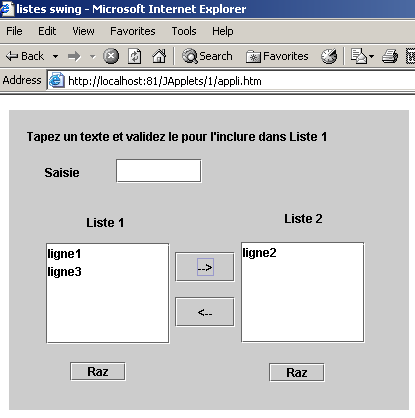
5.6.4. العلامة <applet> في مستند HTML
لقد رأينا أنه داخل مستند HTML، تتم الإشارة إلى التطبيق الصغير بواسطة العلامة <applet>. يمكن أن تحتوي هذه العلامة على سمات متنوعة:
<applet
code=
width=
height=
codebase=
align=
hspace=
vspace=
alt=
>
<param name1=nom1 value=val1>
<param name2=nom2 value=val2>
texte
>
</applet>
معنى المعلمات هو كما يلي:
المعلمة | المعنى |
code | مطلوب - اسم ملف .class المراد تنفيذه |
العرض | مطلوب - عرض التطبيق الصغير في المستند |
الارتفاع | مطلوب - ارتفاع … |
قاعدة الكود | اختياري - عنوان URL للدليل الذي يحتوي على التطبيق الصغير المراد تنفيذه. إذا لم يتم تحديد codebase، فسيتم البحث عن التطبيق الصغير في دليل المستند HTML الذي يشير إليه |
align | اختياري - تحديد موضع (LEFT، RIGHT، CENTER) التطبيق الصغير داخل المستند |
hspace | اختياري - الهامش الأفقي المحيط بالتطبيق الصغير، معبراً عنه بالبكسل |
vspace | اختياري - الهامش الرأسي المحيط بالتطبيق الصغير، معبراً عنه بالبكسل |
alt | اختياري - النص المعروض بدلاً من التطبيق الصغير إذا تعذر على المتصفح تحميله |
param | اختياري - المعلمة التي يتم تمريرها إلى التطبيق الصغير لتحديد اسمه (name) وقيمته (value). يمكن للتطبيق الصغير استرداد قيمة المعلمة name1 باستخدام val1=getParameter("name1") يمكنك استخدام أي عدد تريده من المعلمات |
text | اختياري - سيتم عرضه بواسطة أي متصفح غير قادر على تنفيذ التطبيق الصغير، على سبيل المثال لأنه لا يحتوي على آلة Java الافتراضية. |
لنأخذ مثالاً لتوضيح تمرير المعلمات إلى التطبيق الصغير:
<html>
<head>
<title>paramètres applet</title>
</head>
<body>
<applet code="interfaceParams.class" width="400" height="300">
<param name="param1" value="val1">
<param name="param2" value="val2">
</applet>
</body>
</html>
تم إنشاء كود Java الخاص ببرنامج interfaceParams الصغير كما هو موضح سابقًا. قمنا بإنشاء تطبيق JBuilder ثم أجرينا التغييرات القليلة المذكورة أعلاه:
import java.awt.*;
import java.awt.event.*;
import javax.swing.*;
public class interfaceParams extends JApplet {
JPanel contentPane;
JScrollPane jScrollPane1 = new JScrollPane();
JLabel jLabel1 = new JLabel();
DefaultListModel params=new DefaultListModel();
JList lstParams = new JList(params);
//Building the frame
public void init() {
// enableEvents(AWTEvent.WINDOW_EVENT_MASK);
try {
jbInit();
}
catch(Exception e) {
e.printStackTrace();
}
// other initializations
moreInit();
}
// initializations
public void moreInit(){
// displays applet parameter values
params.addElement("nom=param1 valeur="+getParameter("param1"));
params.addElement("nom=param2 valeur="+getParameter("param2"));
}//more Init
//Initialize component
private void jbInit() throws Exception {
............
this.setSize(new Dimension(205, 156));
//this.setTitle("Applet parameters");
jScrollPane1.setBounds(new Rectangle(19, 53, 160, 73));
............
}
}
التشغيل باستخدام AppletViewer:

5.6.5. الوصول إلى الموارد البعيدة من تطبيق صغير
تحتاج العديد من التطبيقات إلى الوصول إلى المعلومات المخزنة في الملفات أو قواعد البيانات. وقد لاحظنا أن التطبيق الصغير لا يملك حق الوصول إلى موارد الجهاز الذي يعمل عليه. وهذا إجراء احترازي منطقي. وإلا، فسيكون من الممكن كتابة تطبيق صغير لـ"التجسس" على القرص الصلب لمن يقومون بتحميله. ومع ذلك، فإن التطبيق الصغير لديه حق الوصول إلى موارد الخادم الذي تم تنزيله منه، مثل الملفات. وهذا ما سننظر فيه الآن.
5.6.5.1. فئة URL
يمكن لأي تطبيق Java قراءة ملف موجود على جهاز في الشبكة باستخدام فئة java.net.URL (URL = محدد موقع الموارد الموحد). يحدد عنوان URL مورد الشبكة، والجهاز الذي يوجد عليه، بالإضافة إلى البروتوكول ومنفذ الاتصال الذي سيتم استخدامه لاسترداده بالشكل التالي:
البروتوكول:المنفذ//الجهاز/الملف
وبالتالي، يشير عنوان URL http://www.ibm.com/index.html إلى ملف index.html الموجود على الجهاز www.ibm.com. ويمكن الوصول إليه عبر بروتوكول HTTP. لم يتم تحديد المنفذ: سيستخدم المتصفح المنفذ 80، وهو المنفذ الافتراضي لخدمة HTTP.
دعونا نلقي نظرة فاحصة على بعض عناصر فئة URL:
public URL(String spec) | ينشئ مثيل URL من سلسلة نصية بالصيغة "protocol:port//machine/file" - يرمي استثناءً إذا كانت صيغة السلسلة النصية لا تتطابق مع URL |
public String getFile() | يسترد حقل الملف من السلسلة "protocol:port//machine/file" في عنوان URL |
public String getHost() | يسترد حقل "machine" من جزء "protocol:port//machine/file" في عنوان URL |
public String getPort() | يسترد حقل المنفذ من سلسلة عنوان URL "protocol:port//machine/file" |
public String getProtocol() | يسترد حقل البروتوكول من سلسلة URL "protocol:port//machine/file" |
public URLConnection openConnection() | يفتح اتصالاً بالجهاز البعيد getHost() على منفذه getPort() باستخدام البروتوكول getProtocol() من أجل قراءة الملف getFile(). يرمي استثناءً إذا تعذر فتح الاتصال |
public final InputStream openStream() | اختصار لـ openConnection().getInputStream(). يسترد دفق إدخال يمكن من خلاله قراءة محتويات الملف getFile(). يرمي استثناءً إذا تعذر الحصول على الدفق |
public String toString() | يعرض هوية مثيل URL |
هناك طريقتان هنا تهماننا:
- public URL(String spec) لتحديد الملف المراد معالجته
- public final InputStream openStream() لمعالجته
5.6.5.2. مثال: وحدة تحكم-
سنكتب برنامج Java، بدون واجهة مستخدم رسومية، مصمم لعرض محتوى عنوان URL الذي تم تمريره إليه كمعلمة على الشاشة. قد يكون مثال الاستدعاء كما يلي:
البرنامج بسيط نسبيًا:
import java.net.*; // for the URL class
import java.io.*; // for streams
public class urlcontenu{
// displays contents of URL passed as argument
// this content must be text to be ˆtre lisible
public static void main (String arg[]){
// argument verification
if(arg.length==0){
System.err.println("Syntaxe pg url");
System.exit(0);
}
try{
// creation of URL
URL url=new URL(arg[0]);
// content reading
try{
// input stream creation
BufferedReader is=new BufferedReader(new InputStreamReader(url.openStream()));
try{
// read text lines in the input stream
String ligne;
while((ligne=is.readLine())!=null)
System.out.println(ligne);
} catch (Exception e){
System.err.println("Erreur lecture : " +e);
}
finally{
try { is.close(); } catch (Exception e) {}
}
} catch (Exception e){
System.err.println("Erreur openStream : " +e);
}
} catch (Exception e){
System.err.println("Erreur création URL : " +e);
}
}// fine hand
}// end of class
بعد التحقق من وجود حجة بالفعل، نحاول إنشاء عنوان URL باستخدامها:
// création de l'URL
URL url=new URL(arg[0]);
قد يفشل هذا الإنشاء إذا لم تتبع الحجة صيغة URL:protocol:port//machine/file. إذا كان لدينا عنوان URL صحيح من الناحية النحوية، نحاول إنشاء دفق إدخال يمكننا من خلاله قراءة أسطر النص. يوفر دفق الإدخال المقدم بواسطة URL URL.openStream() دفق InputStream، وهو دفق موجه للأحرف: تتم القراءة حرفًا حرفًا، ويجب عليك تشكيل الأسطر بنفسك. لقراءة أسطر النص، يجب عليك استخدام طريقة readLine الخاصة بفئات BufferedReader أو DataInputStream. هنا، اخترنا BufferedReader. كل ما تبقى هو تحويل InputStream الخاص بـ URL إلى تيار BufferedReader. يتم ذلك عن طريق إنشاء تيار InputStreamReader وسيط:
BufferedReader is=new BufferedReader(new InputStreamReader(url.openStream()));
قد يفشل إنشاء هذا الدفق. نتعامل مع الاستثناء المقابل. بمجرد الحصول على الدفق، كل ما يتبقى هو قراءة أسطر النص منه وعرضها على الشاشة.
String ligne;
while((ligne=is.readLine())!=null)
System.out.println(ligne);
مرة أخرى، قد تؤدي عملية القراءة إلى إثارة استثناء يجب معالجته. فيما يلي مثال على تشغيل البرنامج الذي يطلب عنوان URL محلي:
E:\data\serge\Jbuilder\interfaces\JApplets\3>java urlcontenu http://localhost
<html>
<head>
<title>Bienvenue dans le Serveur Web personnel</title>
</head>
<body bgcolor="#FFFFFF" link="#0080FF" vlink="#0080FF"
topmargin="0" leftmargin="0">
<table border="0" cellpadding="0" cellspacing="0" width="100%"
bgcolor="#000000">
............
</table>
</center></div></td>
</tr>
</table>
</td>
</tr>
</table>
</body>
</html>
5.6.5.3. مثال على واجهة المستخدم الرسومية
ستبدو الواجهة الرسومية كما يلي:
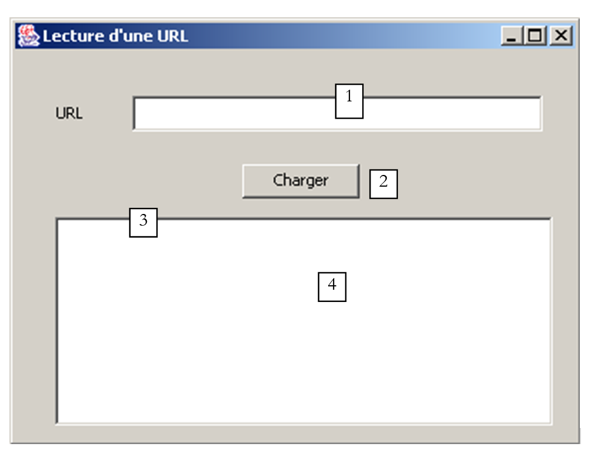
الرقم | الاسم | النوع | الدور |
1 | txtURL | JTextField | عنوان URL المراد قراءته |
2 | btnLoad | JButton | زر لبدء تحميل عنوان URL |
3 | JScrollPane1 | JScrollPane | لوحة قابلة للتمرير |
4 | lstURL | JList | قائمة تعرض محتوى عنوان URL المطلوب |
عند التنفيذ، نحصل على نتيجة مشابهة لتلك التي حصلنا عليها في برنامج وحدة التحكم:
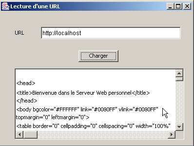
فيما يلي الكود ذو الصلة بالتطبيق:
import java.awt.*;
import java.awt.event.*;
import javax.swing.*;
import javax.swing.event.*;
import java.net.*;
import java.io.*;
public class interfaceURL extends JFrame {
JPanel contentPane;
JLabel jLabel1 = new JLabel();
JTextField txtURL = new JTextField();
JButton btnCharger = new JButton();
JScrollPane jScrollPane1 = new JScrollPane();
DefaultListModel lignes=new DefaultListModel();
JList lstURL = new JList(lignes);
//Building the frame
public interfaceURL() {
..............
}
//Initialize component
private void jbInit() throws Exception {
..............
}
//Replaced, so we can get out when the window is closed
protected void processWindowEvent(WindowEvent e) {
...................
}
void txtURL_caretUpdate(CaretEvent e) {
// sets the state of the Load button
btnCharger.setEnabled(! txtURL.getText().trim().equals(""));
}
void btnCharger_actionPerformed(ActionEvent e) {
// displays contents of URL in list
try{
afficherURL(txtURL.getText().trim());
}catch(Exception ex){
// error display
JOptionPane.showMessageDialog(this,"Erreur : " + ex.getMessage(),"Erreur",JOptionPane.ERROR_MESSAGE);
}//try-catch
}
private void afficherURL(String strURL) throws Exception {
// displays contents of URL strURL in list
// no exceptions are handled specifically. They are simply reassembled
// creation of URL
URL url=new URL(strURL);
// input stream creation
BufferedReader IN=new BufferedReader(new InputStreamReader(url.openStream()));
// read text lines in the input stream
String ligne;
while((ligne=IN.readLine())!=null)
lignes.addElement(ligne);
// close reading flow
IN.close();
}
}
5.6.5.4. برنامج صغير
يتم تحويل التطبيق الرسومي السابق إلى تطبيق صغير كما تم توضيحه عدة مرات. يتم تضمين التطبيق الصغير في مستند HTML باسم appliURL.htm:
<html>
<head>
<title>Applet lisant une URL</title>
</head>
<body>
<h1>Applet lisant une URL</h1>
<applet
code="appletURL.class"
width="400"
height="300"
>
</applet>
</body>
</html>

في المثال أعلاه، طلب المتصفح عنوان URL http://localhost:81/Japplets/2/appliURL.htm من خادم ويب Apache يعمل على المنفذ 81. ثم تم عرض التطبيق الصغير في المتصفح. في هذا المثال، طلبنا عنوان URL http://localhost:81/Japplets/2/appliURL.htm مرة أخرى للتحقق من أننا نحصل بالفعل على ملف appliURL.htm الذي أنشأناه. الآن دعونا نحاول تحميل عنوان URL لا ينتمي إلى الجهاز الذي قدم التطبيق الصغير (هنا، localhost):

تم رفض عنوان URL. هنا نواجه القيد المرتبط بالتطبيقات الصغيرة: فهي لا يمكنها الوصول إلا إلى موارد الشبكة الموجودة على الجهاز الذي تم تنزيلها منه. هناك طريقة للتطبيق الصغير لتجاوز هذا القيد، وهي تفويض طلبات الشبكة إلى برنامج خادم موجود على الجهاز الذي تم تنزيله منه. سيقوم هذا البرنامج بإجراء طلبات الشبكة نيابة عن التطبيق الصغير وإرسال النتائج إليه. وهذا ما يسمى ببرنامج الوكيل.
5.7. برنامج حساب الضرائب الصغير
سنقوم الآن بتحويل التطبيق الرسومي IMPOTS إلى تطبيق صغير. وهذا أمر ذو أهمية خاصة: سيصبح التطبيق متاحًا لأي مستخدم للإنترنت لديه متصفح ومكوّن إضافي لـ Java 1.4 (بفضل مكون JSpinner). وبذلك يصبح تطبيقنا عالميًا... سيتطلب هذا التعديل أكثر قليلاً من مجرد التحويل البسيط من تطبيق رسومي إلى تطبيق صغير الذي أصبح الآن معيارًا. يستخدم التطبيق خيار قائمة Initialize المصمم لقراءة محتويات ملف محلي. ومع ذلك، إذا أخذنا في الاعتبار تطبيق الويب، نرى أن هذه الطريقة لم تعد تعمل:

من الواضح أن البيانات التي تحدد شرائح الضرائب ستكون موجودة على خادم الويب وليس على كل جهاز عميل. سيتم وضع الملف المراد قراءته من خادم الويب هنا في نفس المجلد الذي يوجد فيه التطبيق الصغير، وسيحتاج خيار "Initialize" إلى استرداده من هناك. أظهرت الأمثلة السابقة كيفية القيام بذلك. علاوة على ذلك، لاختيار ملف البيانات محليًا، كنا قد استخدمنا مكون JFileChooser، والذي لم يعد ضروريًا هنا.
سيكون مستند HTML الذي يحتوي على التطبيق الصغير كما يلي:
<html>
<head>
<title>Applet de calcul d'impôts</title>
</head>
<body>
<h2>Calcul d'impôts</h2>
<applet
code="appletImpots.class"
width="320"
height="270"
>
<param name="data" value="impots.txt">
لاحظ المعلمة data، التي تمثل اسم الملف الذي يحتوي على بيانات الشرائح الضريبية. يوجد كل من مستند HTML وفئة appletImpots وفئة impots وملف impots.txt في نفس المجلد على خادم الويب:
E:\data\serge\web\JApplets\impots>dir
12/06/2002 13:24 247 impots.txt
13/06/2002 10:17 654 appletImpots$2.class
13/06/2002 10:17 653 appletImpots$3.class
13/06/2002 10:17 653 appletImpots$4.class
13/06/2002 10:17 651 appletImpots$5.class
13/06/2002 10:06 651 appletImpots$6.class
13/06/2002 10:17 8 655 appletImpots.class
13/06/2002 10:17 657 appletImpots$1.class
13/06/2002 10:24 286 appletImpots.htm
13/06/2002 10:17 1 305 impots.class
فيما يلي كود التطبيق الصغير (لقد قمنا بتمييز التغييرات فقط مقارنة بالتطبيق الرسومي):
...........
import java.net.*;
import java.applet.Applet;
public class appletImpots extends JApplet {
// window components
JPanel contentPane;
............................
// class attributes
double[] limites=null;
double[] coeffr=null;
double[] coeffn=null;
impots objImpots=null;
String urlDATA=null;
//Building the frame
public void init() {
//enableEvents(AWTEvent.WINDOW_EVENT_MASK);
try {
jbInit();
}
catch(Exception e) {
e.printStackTrace();
}
// other initializations
moreInit();
}
// form initialization
private void moreInit(){
// calculate menu disabled
mnuCalculer.setEnabled(false);
................
// retrieve the name of the tax scale file
String nomFichier=getParameter("data");
// mistake?
if(nomFichier==null){
// error msg
txtStatus.setText("Le paramètre data de l'applet n'a pas été initialisé");
// we block the Initialize option
mnuInitialiser.setEnabled(false);
// end
return;
}//if
// set the URL of the data
urlDATA=getCodeBase()+"/"+nomFichier;
}//moreInit
//Initialize component
private void jbInit() throws Exception {
...................
}
void mnuQuitter_actionPerformed(ActionEvent e) {
// quit the application
System.exit(0);
}
void mnuInitialiser_actionPerformed(ActionEvent e) {
// load the data file
try{
// dATA READING
lireDATA();
// create impots object
objImpots=new impots(limites,coeffr,coeffn);
................
}
private void lireDATA() throws Exception {
// data tables
ArrayList aLimites=new ArrayList();
ArrayList aCoeffR=new ArrayList();
ArrayList aCoeffN=new ArrayList();
String[] champs=null;
// open file in read mode
BufferedReader IN=new BufferedReader(new InputStreamReader(new URL(urlDATA).openStream()));
// read the file line by line
....................
}
void mnuCalculer_actionPerformed(ActionEvent e) {
// tAX CALCULATION
......................
}
void txtSalaire_caretUpdate(CaretEvent e) {
..........
}
void mnuEffacer_actionPerformed(ActionEvent e) {
...............
}
}
هنا، نعلق فقط على التغييرات الناتجة عن حقيقة أن ملف البيانات المراد قراءته موجود الآن على جهاز بعيد بدلاً من جهاز محلي:
يتم الحصول على عنوان URL لملف البيانات المراد قراءته باستخدام الكود التالي:
// retrieve the name of the tax scale file
String nomFichier=getParameter("data");
// mistake?
if(nomFichier==null){
// error msg
txtStatus.setText("Le paramètre data de l'applet n'a pas été initialisé");
// we block the Initialize option
mnuInitialiser.setEnabled(false);
// end
return;
}//if
// set the URL of the data
urlDATA=getCodeBase()+"/"+nomFichier;
تذكر أن اسم الملف "impots.txt" يتم تمريره في معلمة البيانات الخاصة بالتطبيق الصغير:
يبدأ الكود أعلاه باسترداد قيمة معلمة data مع معالجة أي أخطاء محتملة. إذا كان عنوان URL لمستند HTML الذي يحتوي على التطبيق الصغير هو http://localhost:81/JApplets/impots/appletImpots.htm، فسيكون عنوان URL لملف impots.txt هو http://localhost:81/JApplets/impots/impots.txt. نحتاج إلى إنشاء عنوان URL هذا. تُرجع طريقة getCodeBase() الخاصة بالتطبيق الصغير عنوان URL للدليل الذي تم استرداد مستند HTML الذي يحتوي على التطبيق الصغير منه، لذا في مثالنا، http://localhost:81/JApplets/impots. وبالتالي، فإن العبارة التالية تنشئ عنوان URL لملف البيانات:
في الأسلوب lireFichier()، الذي يقرأ محتوى عنوان urlData، نجد إنشاء دفق الإدخال الذي سيسمح لنا بقراءة البيانات:
// open file in read mode
BufferedReader IN=new BufferedReader(new InputStreamReader(new URL(urlDATA).openStream()));
من هذه النقطة فصاعدًا، لم يعد من الممكن التمييز بين ما إذا كانت البيانات تأتي من ملف بعيد أم من ملف محلي. فيما يلي مثال على التطبيق الصغير أثناء العمل:

5.8. الخلاصة
قدم هذا الفصل
- مقدمة حول إنشاء واجهات المستخدم الرسومية باستخدام JBuilder
- مكونات Swing الأكثر شيوعًا
- تطوير التطبيقات الصغيرة
يجب أن نلاحظ أن
- يمكن كتابة الكود الذي يولده JBuilder يدويًا. وبمجرد الحصول على هذا الكود بطريقة أو بأخرى، يكفي وجود JDK بسيط لتشغيله، وبذلك يصبح JBuilder غير ضروري.
- يمكن أن يؤدي استخدام أداة مثل JBuilder إلى مكاسب كبيرة في الإنتاجية:
- على الرغم من أنه من الممكن كتابة الكود الذي تم إنشاؤه بواسطة JBuilder يدويًا، إلا أن ذلك قد يستغرق وقتًا طويلاً ولا يقدم فائدة تذكر، حيث إن منطق التطبيق موجود عمومًا في مكان آخر.
- يمكن أن يكون الكود الذي تم إنشاؤه مفيدًا. تعد قراءته ودراسته طريقة جيدة لاكتشاف طرق وخصائص معينة للمكونات التي تستخدمها لأول مرة.
- JBuilder متعدد المنصات. لذلك، تحتفظ بمهاراتك عند التبديل بين المنصات. إن القدرة على كتابة برامج تعمل على كل من Windows وLinux هي، بالطبع، عامل إنتاجية مهم للغاية. ولكن هذا يرجع إلى Java نفسها، وليس إلى JBuilder.
5.9. JBuilder على Linux
تم اختبار جميع الأمثلة السابقة على نظام Windows 98. قد يتساءل المرء عما إذا كانت البرامج المكتوبة قابلة للنقل كما هي إلى نظام Linux. شريطة أن يحتوي جهاز Linux المعني على الفئات المستخدمة من قبل البرامج المختلفة، فإنها قابلة للنقل. إذا قمت، على سبيل المثال، بتثبيت JBuilder على نظام Linux، فإن الفئات الضرورية موجودة بالفعل على جهازك. فيما يلي مثال على ما يحدث عند تشغيل أحد برامجنا على مكون JList باستخدام JBuilder 4 على نظام Linux:
نصف أدناه تثبيت JBuilder 4 Foundation على جهاز Linux. لا يطرح تثبيته على جهاز Win9x أي مشاكل وهو مشابه للعملية الموصوفة هنا. من المحتمل أن يختلف تثبيت الإصدارات الأحدث، لكن قد يوفر هذا المستند بعض المعلومات المفيدة.
يتوفر JBuilder على موقع Inprise على الويب على العنوان http://www.inprise.com/jbuilder

تحتوي هذه الصفحة على روابط لنظامي التشغيل Windows وLinux، من بين أنظمة أخرى. سنشرح الآن كيفية تثبيت JBuilder على جهاز Linux يعمل بواجهة KDE الرسومية.
عند النقر على رابط "JBuilder 4 for Linux"، سيظهر نموذج. قم بتعبئته، وستتلقى ملفين:
jb4docs_fr.tar.gz: وثائق وأمثلة JBuilder 4
jb4fndlinux_fr.tar.gz: JBuilder 4 Foundation. هذه نسخة محدودة من JBuilder 4 التجاري، لكنها كافية للأغراض التعليمية.
سيتم إرسال مفتاح تنشيط البرنامج إليك عبر البريد الإلكتروني. سيسمح لك هذا المفتاح باستخدام JBuilder 4 وسيُطلب منك إدخاله عند أول استخدام. إذا فقدت هذا المفتاح، يمكنك العودة إلى الرابط أعلاه واتباع رابط "احصل على مفتاح التنشيط". سنفترض من الآن فصاعدًا أنك مسجل الدخول كـ root وأنك موجود في الدليل الذي يحتوي على ملفَي tar.gz المذكورين أعلاه. قم بفك ضغط الملفين:
[ls -l]
drwxr-xr-x 3 nobody nobody 4096 oct 10 2000 docs
drwxr-xr-x 3 nobody nobody 4096 déc 5 13:00 foundation
[ls -l foundation]
-rw-r--r-- 1 nobody nobody 1128 déc 5 13:00 deploy.txt
-rwxr-xr-x 1 nobody nobody 69035365 déc 5 13:00 fnd_linux_install.bin
drwxr-xr-x 2 nobody nobody 4096 déc 5 13:00 images
-rw-r--r-- 1 nobody nobody 15114 déc 5 13:00 index.html
-rw-r--r-- 1 nobody nobody 23779 déc 5 13:00 license.txt
-rw-r--r-- 1 nobody nobody 75739 déc 5 13:00 release_notes.html
-rw-r--r-- 1 nobody nobody 31902 déc 5 13:00 whatsnew.html
[ls -l docs]
-rw-r--r-- 1 nobody nobody 1128 oct 10 2000 deploy.txt
-rwxr-xr-x 1 nobody nobody 40497874 oct 10 2000 doc_install.bin
drwxr-xr-x 2 nobody nobody 4096 oct 10 2000 images
-rw-r--r-- 1 nobody nobody 9210 oct 10 2000 index.html
-rw-r--r-- 1 nobody nobody 23779 oct 10 2000 license.txt
-rw-r--r-- 1 nobody nobody 75739 oct 10 2000 release_notes.html
-rw-r--r-- 1 nobody nobody 31902 oct 10 2000 whatsnew.html
في كلا الدليلين اللذين تم إنشاؤهما، يمثل الملف .bin ملف التثبيت. استخدم أيضًا متصفح الويب لعرض ملف index.html في كل دليل. فهما يوفران إرشادات لتثبيت كلا المنتجين. لنبدأ بتثبيت JBuilder Foundation:
تظهر شاشة التثبيت الأولى. وستتبعها شاشات أخرى عديدة:

تأكيد. تظهر شاشة توضيحية بعد ذلك:

انقر فوق [التالي].
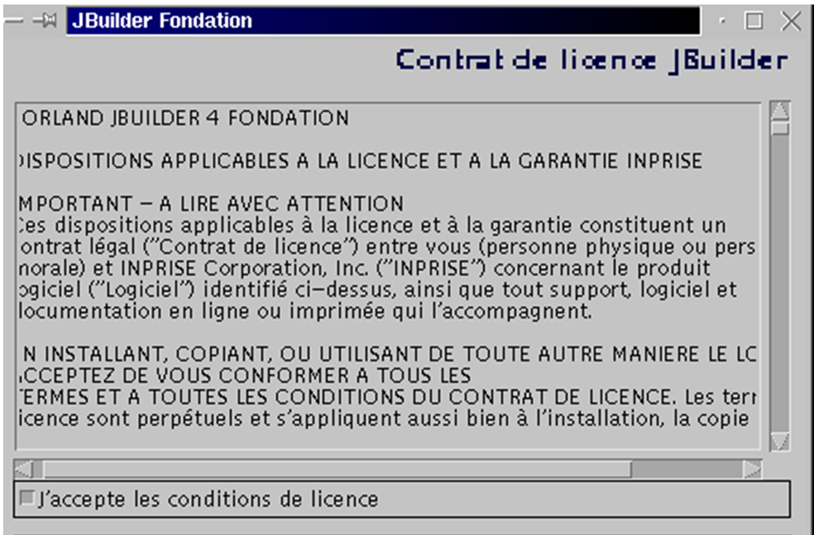
اقبل اتفاقية الترخيص وانقر على [التالي].

اقبل الموقع المقترح لبرنامج JBuilder (دوّن هذا الموقع؛ ستحتاج إليه لاحقًا) وانقر على [التالي]. سيكتمل التثبيت بسرعة.

نحن جاهزون لإجراء الاختبار الأول. في KDE، قم بتشغيل مدير الملفات للانتقال إلى دليل الملفات التنفيذية لـ JBuilder: /opt/jbuilder4/bin (إذا قمت بتثبيت JBuilder في /opt/jbuilder4):

انقر على أيقونة JBuilder أعلاه. ونظرًا لأن هذه هي المرة الأولى التي تستخدم فيها JBuilder، فسيتعين عليك إدخال مفتاح التنشيط الخاص بك:

املأ حقول الاسم والشركة. انقر على [إضافة] لإدخال مفتاح التنشيط الخاص بك. تذكر أن هذا المفتاح قد تم إرساله إليك عبر البريد الإلكتروني، وإذا فقدته، يمكنك استرداده من عنوان URL الذي قمت بتنزيل JBuilder 4 منه (انظر بداية التثبيت). بمجرد قبول مفتاح التنشيط الخاص بك، سيتم عرض شروط الترخيص:
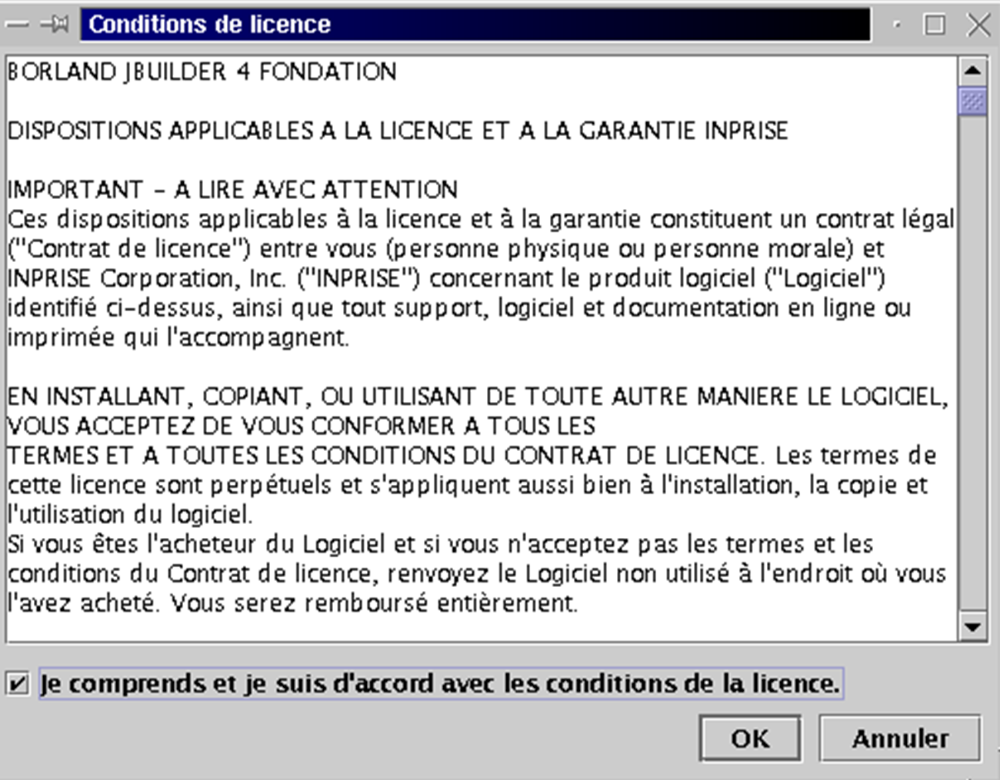
بالنقر فوق "موافق"، ستعود إلى نافذة إدخال المعلومات التي رأيتها سابقًا:
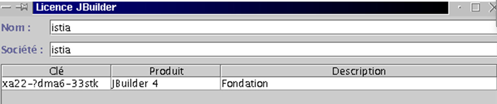
انقر فوق "موافق" لإكمال هذه الخطوة، التي يتم تنفيذها فقط أثناء التشغيل الأول. ستظهر بعد ذلك بيئة التطوير JBuilder:

اخرج من JBuilder لتثبيت الوثائق الآن. سيؤدي ذلك إلى تثبيت عدد من الملفات التي سيتم استخدامها في تعليمات JBuilder، والتي لا تزال غير مكتملة حاليًا. ارجع إلى الدليل الذي قمت فيه باستخراج ملفات JBuilder tar.gz. يوجد برنامج التثبيت في الدليل docs. انتقل إليه:
[cd docs]
[ls -l]
-rw-r--r-- 1 nobody nobody 1128 oct 10 2000 deploy.txt
-rwxr-xr-x 1 nobody nobody 40497874 oct 10 2000 doc_install.bin
drwxr-xr-x 2 nobody nobody 4096 oct 10 2000 images
-rw-r--r-- 1 nobody nobody 9210 oct 10 2000 index.html
-rw-r--r-- 1 nobody nobody 23779 oct 10 2000 license.txt
-rw-r--r-- 1 nobody nobody 75739 oct 10 2000 release_notes.html
-rw-r--r-- 1 nobody nobody 31902 oct 10 2000 whatsnew.html
ملف التثبيت هو doc_install.bin، ولكن لا يمكنك تشغيله على الفور. إذا قمت بذلك، فسوف يفشل التثبيت دون أن تفهم السبب. اقرأ ملف index.html في متصفح للحصول على وصف تفصيلي لعملية التثبيت. يتطلب المثبت وجود آلة Java الافتراضية (JVM)؛ وبالتحديد، برنامج يسمى java، والذي يجب أن يكون موجودًا في مسار PATH بجهازك. لاحظ أن PATH هو متغير Unix تحدد قيمته، في صيغة rep1:rep2:...:repn، الدلائل repi التي يجب البحث فيها عند البحث عن ملف قابل للتنفيذ. هنا، يطلب المثبت تنفيذ برنامج Java. قد يكون لديك إصدارات متعددة من هذا البرنامج اعتمادًا على عدد آلات Java الافتراضية التي قمت بتثبيتها هنا وهناك. منطقيًا، سنستخدم الإصدار المقدم من JBuilder 4، والذي يقع في /opt/jbuilder4/jdk1.3/bin. لإضافة هذا الدليل إلى متغير PATH:
[echo $PATH]
/usr/local/sbin:/usr/sbin:/sbin:/usr/local/sbin:/usr/local/bin:/sbin:/bin:/usr/sbin:/usr/bin:/usr/X11R6/bin:/root/bin
[export PATH=/opt/jbuilder4/jdk1.3/bin/:$PATH]
[echo $PATH]
/opt/jbuilder4/jdk1.3/bin/:/usr/local/sbin:/usr/sbin:/sbin:/usr/local/sbin:/usr/local/bin:/sbin:/bin:/usr/sbin:/usr/bin:/usr/X11R6/bin:/root/bin
يمكننا الآن بدء تثبيت الوثائق:
هذا تثبيت رسومي:
وهي تشبه إلى حد كبير عملية التثبيت الخاصة بـ JBuilder Foundation. ولذلك، لن ندخل في التفاصيل هنا. هناك شاشة واحدة يجب ألا تفوتها:

من المفترض أن يكتشف المثبت تلقائيًا الموقع الذي قمت بتثبيت JBuilder Foundation فيه. لذلك، لا تقم بتغيير الإعدادات الافتراضية ما لم تكن غير صحيحة بالطبع.
بمجرد تثبيت الوثائق، نكون جاهزين لإجراء اختبار آخر لـ JBuilder. قم بتشغيل التطبيق كما هو موضح أعلاه. بمجرد فتح JBuilder، حدد Help > Help Topics. في الجزء الأيسر، انقر فوق رابط Tutorials:
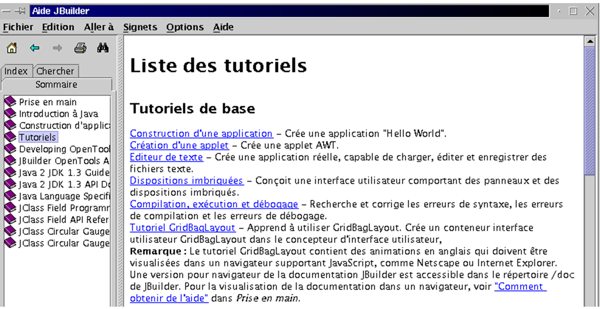
يأتي JBuilder مزودًا بمجموعة من البرامج التعليمية التي ستساعدك على البدء في برمجة Java. أدناه، اتبعنا البرنامج التعليمي "إنشاء تطبيق" المذكور أعلاه.

في JBuilder، انتقل إلى File > New Project. سيقوم معالج بإرشادك عبر ثلاث شاشات:

سنقوم بإنشاء نافذة بسيطة بعنوان "Hello, everyone." وسنسمي هذا المشروع "hello." تم تشغيل المثال بواسطة root. ثم يعرض JBuilder تجميع جميع المشاريع في دليل "jbproject" داخل دليل تسجيل الدخول root. سيتم وضع مشروع "hello" في دليل "hello" (حقل Project Directory Name) داخل "jbproject." انقر على [Next].

هذه الشاشة الثانية هي ملخص للمسارات المختلفة في مشروعك. لا يوجد شيء لتغييره. انقر فوق [التالي].

تطلب منك الشاشة الثالثة تخصيص مشروعك. املأ التفاصيل وانقر على [Finish].
انتقل الآن إلى ملف/جديد:

حدد "تطبيق" وانقر على "موافق". سيعرض المعالج الجديد شاشتين:

يستخدم حقل "الحزمة" اسم المشروع. يطلب حقل "الفئة" الاسم الذي سيتم تسمية الفئة الرئيسية للمشروع به. استخدم الاسم أعلاه وانقر على [التالي]:

يتضمن تطبيقنا فئة Java ثانية لنافذة التطبيق. قم بتسمية هذه الفئة. حقل العنوان هو العنوان الذي تريد تسمية هذه النافذة به. يوفر جزء الخيارات خيارات لنافذتك. حددها جميعًا وانقر على [إنهاء]. ستعود بعد ذلك إلى بيئة JBuilder، التي تم تحديثها بالمعلومات التي قدمتها لمشروعك:

في النافذة العلوية اليسرى (1)، ترى قائمة الملفات التي يتكون منها مشروعك. وهذا يشمل فئتي .java اللتين قمنا بتسميتهما للتو. في النافذة اليمنى (2)، ترى كود Java لفئة coucouCadre. أما النافذة السفلية اليسرى فتعرض بنية مشروعك (الفئات، الطرق، السمات). وهو جاهز للتشغيل. انقر فوق الزر 4 أعلاه، أو حدد Run/Run Project (تشغيل/تشغيل المشروع)، أو اضغط على المفتاح F9. ستظهر لك النافذة التالية:

بالنقر على خيار Help، سترى المعلومات التي قدمتها لمعالجات الإنشاء. لن نذهب أبعد من ذلك. حان الوقت الآن للانغماس في الدروس.
قبل أن ننتهي، دعنا نوضح أنه يمكنك استخدام ليس JBuilder وواجهته الرسومية فحسب، بل JDK الذي جاء معه ووضع في /opt/jbuilder4/jdk1.3. أنشئ ملف essai1.java التالي:
import java.io.*;
public class essai1{
public static void main(String args[]){
System.out.println("coucou");
System.exit(0);
}
}
دعونا نقوم بتجميع البرنامج وتشغيله باستخدام JBuilder JDK: